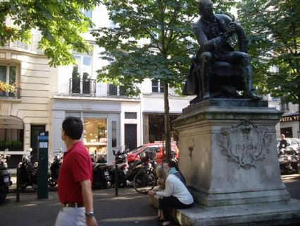
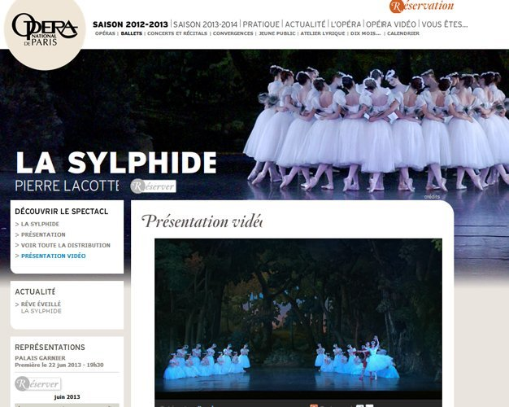
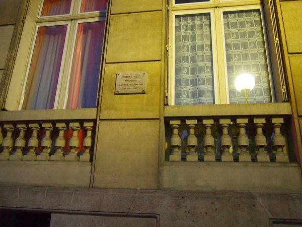
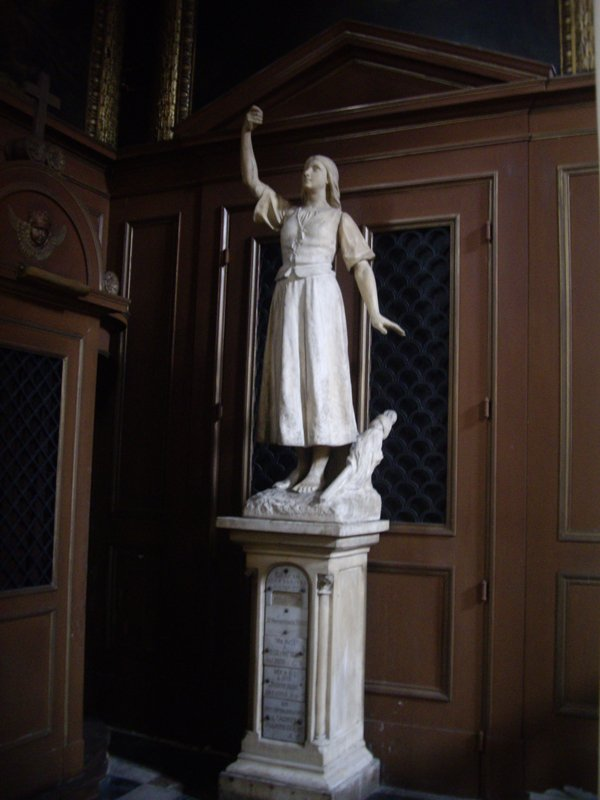
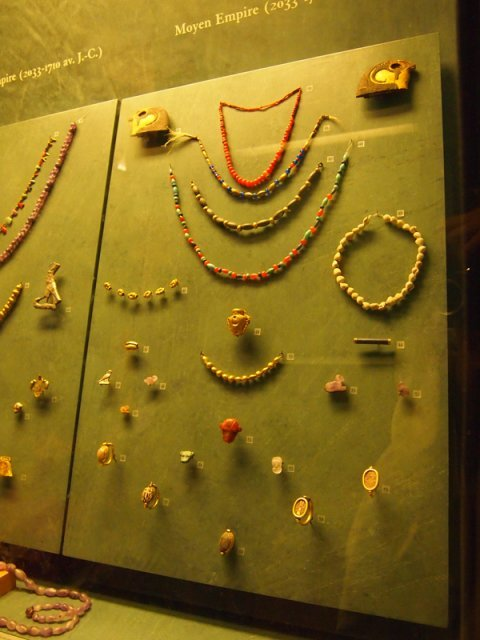
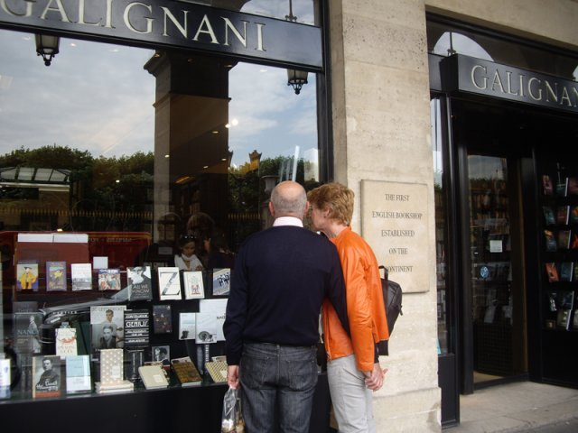
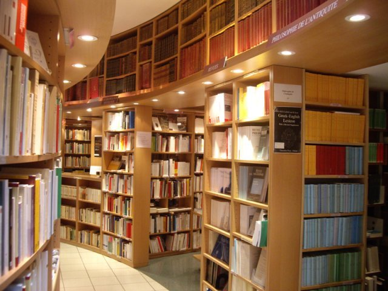

| 2013年 サント＝ブーヴ通りで 憂愁書架 パリ 旅の記録 | |
| 小林 才機 | |
| UNKNOWN (2014) | |
憂愁書架
パリ 旅の記録 （５）
201
3
年 サント＝ブーヴ通りで
小林才機
本書の内容はブログ『憂愁書架』に2013年7月13日 (土)から2013年8月31日 (土)まで、憂愁書架特別編として掲載したものです。
『憂愁書架』 (http://saiki.cocolog-nifty.com/shoka/)
著者への連絡先 saiki.kobayashi@nifty.com
目次
6月 2 1 日（金）
「世界最悪の旅」というと、南極点を目指したスコット隊の悲劇ですが、今回の旅行の出だしは、チェリー・ガラードのその本の題名を思い出させるものでした 。4 月に腰痛が悪化したものの、養生が実を結んで、何と か6 月に入る頃には体調万全と思われたのに、よりによって、出発の前夜、思ってもみなかった痛風の発作で歩けなくなってしまったのです。仕事の帰り、左足に違和感を感じてひやっとしたのですが、家に着いて靴を脱いでみると鹿児島のサツマイモのように赤く腫れています。もう荷造りを終えて、明日の出発を楽しみにしていた妻も、それを見て、冷水をかけられたように意気消沈してしまいました。特効薬の玉ねぎのスライスを作りながら、目に悔し涙か玉ねぎの涙かが浮かんでいます。
頑張って玉ねぎを食べ、湿布を張り、水とお茶を飲みまくって一晩で十数回も尿を出すという荒療治で、明け方にはやや痛みが薄らいで来ました 。2 年ほど発作がなかったのに、なぜこんなタイミングで再発しなければならないのか、ツナ缶の食べ過ぎか、ビールの飲み過ぎか、いやもう後悔しても仕方がありません。飛行機のチケット、ホテルの予約、旅行保険の契約、バレエの入場券、おまけに土産までネットで買っていて、もはや 取り消しは不可能、とにかく、ステッキを頼りに、荷物を全部妻に任せて、半病人の状態で飛行機に乗る覚悟を決めました。しかし、街を歩き回ることもできないし、ワインも飲めず、肉や魚も食べられず、エクレアやタルトも食べられないとしたら、いったい何のためにパリに行くのでしょうか。
旅程はほぼ去年と同じ、羽田発深夜便、明け方パリ到着です。空港内はけっこう歩くので、搭乗した時はまた足が腫れてジンジンと痛みました。前夜ほとんど眠れなかったのに、痛みのせいか、機内の照明が落とされても全然眠くありません。水を飲みながらじっと目を瞑っていましたが、何度も乱気流の中を航行して、不快さが徐々に募ってきました。明け方うつらうつらしただけで 朝6 時にパリ到着、いつものように、ツアー客の後ろについて迷わないようにしましたが、私たちを囲むように歩いていたツアーの一団（ほとんどは中高年の女性）が停止して、添乗員の説明が始まったので、私たちも立ち止まって聴き耳をたてました。それによると、 約 4 0 人のツアーのう ち 3 0 人は女性で、どうも印象派をめぐるツアーらしい、このままバスでジヴェルニーに行き、さらにルーアンまで行って泊まるようです。バスではトイレ休憩はないので、空港にいるうちにトイレを済ましておくようにと念を押していました。しかし 、 1 3 時間近くも飛行機に乗って、すぐにバスで移動するのに、皆、とても元気です。私には、スケジュール通りの団体行動など考えられません。途中で、自分だけ具合が悪くなったらどうするのでしょうか。バスを一本遅らせてカフェで休むなどできないでしょうから、ものすごい体力と協調性がいるわけです。
さて、前回のように私たちは、だらだらとエール・フランスバスでポルト・マイヨーまで行き 、 8 2 番のバスに乗りました。しかし、行先は終点のリュクサンブールでなく、 途中のノートルダム・デ・シャンです。そこで、やっこらさ、とバスを降り、私はパナマ帽にステッキだけという軽装、妻は重いキャリーケースを二つ引っ張ってさらにバッグを斜めにかけオリンパスをぶら下げるという重装です。しかし、ホテルは近く、すぐ前に見える道を左に曲がると、そこはもうサント＝ブーヴ通りで、目前にホテル・サント＝ブーヴの白い扉が見えます。チェックイン の3 時にはまだ大分間があるので、私たちは重い荷物をひとまずレセプションの女性に預けました。身軽になったものの、杖をつきながらでは、パリの街も十分たのしめません。おまけに、飛行機で眠れず、胸もまだむかむかして苦しい。ホテルのすぐ近くにあったフランプリというスーパーで水を買い、その並びのパン屋のジュリアンで、サンドイッチを二つ買って、近くのリュクサンブール公園の端っこのベンチに座って食べました。妻はサーモン、私はソーセージです。食べていると、どこからともなく小鳥が現れて、パンくずを待っています。放ってやると、いつの間にか、小鳥や鳩が何匹も現れてきてしまいました。どの鳥もみんな可愛く見えるのは、私の心が弱くなっているからで、いつも私にまとわりついて離れない飼猫のルーミーのことなど思い出したからです。
いつもの宿、オテル・グランゾムを予約できなかったのは、今回の旅行が妻の気まぐれで慌ただしく決まったからです。去年の旅行の後、しばらくはおとなしかったものの、秋になると、またまた日常を脱却したいという気持に襲われたようです。「富士山が噴火する」とか「南海トラフが危ない」とかしきりに言うようになって、「生きているうちに、やりたいことをやっておいた方がいい」と私の上を行く自滅的思想を持つまでになりました 。 1 2 月になると、妻らしくもなく、歳末ジャンボ宝くじをネット で 1 0 枚購入したと言うのです。妻によると 、6 億円当たると自動的に振り込まれるとのことですが、私はあきれてこう言いました。「ねえ、一等に当たるの は 50 0 万分 の1 の確率だけれど、それって米俵を床にぶちまけてその中から一粒とってそれが当たると同じ確率だよ。そんなの に 300 0 円も使ったんだ。それより、大病や事故に遭わずに毎日を平穏に暮らせる幸運を感謝すべきではないかな」さすがに妻もそれを聞いて反省したようですが、私はその晩 、6 億円当たったらどうしようか妄想してなかなか寝つけませんでした。
年明けて、エールフランスの割引航空券が売り出されると、もはや気持ちを抑制することはできず、仕方なくまたパリ行きに同意しました。むろん、いつものホテルは予約いっぱいで取れず、周辺の目ぼしいホテルも空きがありません。いろいろ探して、リュクサンブールとモンパルナスの中間にあるホテル・サント＝ブーヴに決めましたが、ロビーに暖炉があるのが妻の気にいったようです。
リュクサンブール公園からぶらぶら歩いてモンパルナス大通りに出ました。足はまだ痛いが、異国の匂いがその空気から感じ取れると、何か急に元気になったように思えます。そういえば、シャルル・ドゴール空港に降りると、いつも香水のような匂い、しいて言えばゲランのシャリマーのような匂い、に気がつくのですが、それが典型的なパリの香りでしょうか。ロンドンやフランクフルトではむろん、ブリュッセルでさえそんな香りはしないのですが。
さて、モンパルナス大通りを歩いて、すぐ目についた Tschan n 書店に入ってみました。隣接して児童書部門 Librairie Tschann jeuness e の店もあります。この Tschan n 書店に入って驚きました。文学書、哲学書、芸術書、思想書が中心ですが、そのレベルの高いこと。何を持ってレベルが高いかというと説明に窮するのですが、本好きには何となく分かるその雰囲気です。私はこういう店が大好きなので、たっぷり時間を使ってフランスの良質の書物の感触を楽しみました。レジでは、女性の店員がお婆さんの相談に乗っていますが、どうやら哲学の本についてらしい。どうもフランスの本屋の特長は、店員が博識で読書案内を兼ねられることと、小さな書店でも作家を読んで催しをしたりすることにあるようです。私は、千一夜叢書のイポリット・テーヌの Xenophon, l'Anabas e（4 ユーロ）を買ってから店内の写真を撮らせてもらいました。
Tschan n 書店からモンパルナス大通りを渡ったところにある Campagne Premier e 通りに行ってみました。ここは、あまりに有名な通りですが、いざ歩いてみるとどうということはありません。しかし、旅行者らしい二人の白人男性が本を見ながら、いわく付きの建物を指差したり写真に撮っています。モンパルナス大通りとラスパイユ通りを結んでいるこの通りは、まず、ゴダールの「勝手にしやがれ」の最後の場面の舞台となりました。銃で撃たれたベルモンドが走って逃げて、ラスパイユ通りにたどり着いたところで大袈裟に倒れこむのです。それか ら 3 1 番地の写真家マン・レイのアトリエ。私は、ホテルが決まってからロットマンの『マン・レイ 写真と恋とカフェの日々』（白水社）を取り寄せて読んでみました。著者のハーヴァート ・ R . ロットマンは 、 2 0 世紀前半のフランスの政治と文学についての見事な書物である『セーヌ左岸』の著者ですが 、 2 0 世紀初頭のモンパルナスの芸術家集団をマン・レイを狂言回しとして描いたこの本には正直失望しました。というのも、マン・レイという男がまるで面白くないし、連れ合いのキキという有名な女性も全然好きになれないからです。そのアトリエの隣 、 2 9 番地のホテル・イストリアはまだ営業していますが、往時の雰囲気は少しもありません。このホテルにはリルケ、サティ、マヤコフスキー、ラディゲ、ツァラも泊まったというから驚きです。この通り の 2 3 番地には藤田嗣治が 、 1 4 番地の屋根裏部屋にはヴェルレーヌとランボーも住んでいました。しかし、目玉 は 1 7 番地に住んでいたユージーヌ・アジェでしょう。無名のままこの番地で死んだアジェの残した写真はこの通りに住んでいたアメリカ女性ベレニス・アボットに見出されて、後世にその名を残すことになりました。
再びモンパルナス大通りを渡って、ここから一番近い教会であるサン・ジャック・オーパ教会に行ってみることにしました。サン・ジャック通りにあるこの教会の前は何度も通っているのにいつも閉まっていたのです。今回もやはり閉まっていて、扉の上の紙には 、2 時半に開くと書いてありました。別に無理して入りたくもない教会ですが、何度も拒絶されると無理にでも入ってみたくなります。それで時間を潰すために、近くのマリー・キュリー博物館に行ってみることにしました。この博物館は長い間改装のために閉館していて、昨年の夏にリニューアルオープンしたものです。
パンテオンの横の道にあるピエール・エ・マリー・キュリー通りからキュリー研究所に入ります。ユルム通りを挟んですぐ向かいには高等師範学校（エコール・ノルマル・シュペリュール）があります。このキュリー研究所の敷地は広く、目当てのキュリー博物館はその一番奥にありました。入場無料で、すでに何組かの人たちが展示を見ています。ところが、改装後の博物館はあまりに綺麗で洗練されていて、当時の「ジャガイモ倉庫と馬小屋を合わせたような」実験室の趣はまったくありません。（放射線の飛跡を調べる）ウィルソン霧箱の実験というのを初めて見ることができたのが、まあ収穫といえましょうか。ラジウムをアメリカの大統領に送るための厳重な鉛の箱もありました 。 1 0 分ぐらい見て、さて帰ろうかと妻の方を向いた時、突然、けたたましいブザーの音が部屋中に鳴り響きました。すわ、放射能が漏れたのに違いないと一瞬ひやりとしました。受付の女性係員が私たちを誘導して、裏出口から外に出してくれました。ブザーは研究所中で鳴っているらしく、どの窓からも人が顔を出しています。白衣を着た二人の男性が、慌てた風もなく建物の間を走って来ました 。5 分ほどして鳴り止んだのですが、妻は事の真相を知るべく、再び博物館に入って受付の女性に「本当は何が起こったのか」と尋ねました。答えは、何と検知器のテスト、つまり実地訓練だというのです。妻によれば、この博物館のがっかり感はザッキン美術館の地味さとよい勝負だということです。
キュリー博物館を出て、再びサン・ジャック・オーパ教会へ。ちょう ど2 時半で、黒人の女性が重い木の扉を開けているところでした 。 1 7 世紀に建てられたこの教会は、ユゴーの『レ・ミゼラブル』にも登場する教会ですが、元々はサンチャゴ・デ・コンポステーラへの巡礼道にあって、病に倒れた巡礼の救護所としての役目を果たしていました。その後ジャンセニスムの拠点となり、ポール・ロワイヤルの霊的指導者サン・シラン師の墓もあります 。 1 8 世紀には司教ジャン・コシンが貧しく見捨てられた人々のための医療活動行い、その精神はこの近くにある現在のパリの代表的病院であるコシン病院の名に残っています。
さて、中に入ってみると、何の変哲もない普通の教会でした。内陣の奥に鎮座しているのはキリストを抱いたマリア像で、どの教会にもあるありふれた像ですが、穏やかさのかけらもない厳しい表情にはっとします。（なお、カトリックの教会は開いている時間はほぼすべて出入り自由です。内陣の奥まで立ちいることができるのは他の宗教施設では考えられません。見学者に課せられるのはせいぜ い1 ユーロのろうそくか絵葉書を買うぐらいです。多分その理由は、もともと教会が中世の人々にとって集会の場であったからでしょう）一周してからすぐに教会を出て、ホテルへの帰り道、サン・ミッシェル通りの古本屋「星の王子様書店」に寄ってみました。店頭にはいろいろ面白い本が割引値段で並んでいて、ドラクロワの版画が挿入されたゲーテ『ファウスト』の小型本 が5 ユーロというびっくり値段で、買おうか買うまいか、妻と激しい議論の応酬がありましたが、やや重い本なので購入を断念しました。
またまた、ジュリアンで今度はピスタチオ入りのエスカルゴやパン・オ・ショコラを買い、フランプリでペリエやヨーグルトやサクランボを買って 、3 時ぴったりにホテルにチェックインしました。このホテル・サント＝ブーヴは格としてはほぼオテル・デ・グランゾム並ですが、ヴァヴァン交差点近くでリュクサンブール公園の横という絶好の立地にあり、客のほとんどは白人のリピーターのようです。部屋は一階（日本の二階）で窓からの眺めはよくないし、部屋も予想通り狭いが、浴室や調度は豪華で凝っています。すでに、私たちのキャリーケースが運ばれており、ゆっくり風呂に浸かって、パンや果物を食べて、疲れ切っている私は足の湿布を取り替えてからひとしきり眠ってしまいました。
夕 方6 時、ホテルを出て、サン・ジェルマン・デ・プレに向かってぶらぶら歩きました。今日は年に一度の音楽の日で、フランス全土でおびただしい数の音楽のイヴェントが開かれます。登録されたイヴェントだけでなく、街のあちこちで即興の演奏も披露されます。サン・ジェルマン・デ・プレに行けば、そういうものがたくさん見れるだろうと考えたのですが、ステッキを突いての危なかっしい足取りで、いつ倒れるとも分かりません。しかし、気分は上々で、リュクサンブール公園に沿ったギヌメ通りを進みます。音楽の日というのは一種のお祭りなのか、公園の柵沿いに高校生らしき集団が何組も騒いでいます。しかも、明らかに未成年なのにアルコールの匂いが充満しています。タンバリンを鳴らしたり、ギターをかき鳴らしたりしているのですが、まともな音楽とは思えません。ギヌメ通りからボナパルト通りに出ると、書店がちらほら立ち並んでいます。演劇関連の本を出している l'Arch e 書店や歴史専門 の Picard & Epon a 書店はもう閉まっていました。美術、歴史、オカルト系の古書店 librairie d'Argenc e が開いていたので、店頭のサービス本を物色してみました。丁寧に全部見たが収穫なし。その並び、マゼリーヌ通りとの交差点にカトリック系の大型書店 La Procur e の本店があります。一ブロックの通りを全部占める縦に長い本屋で、一度入ってみたかったので入ってみました。総合書店で雑誌以外は何でもありそうですが 、 Tschan n 書店ほどではないがレベルの高い品揃えです。児童書 、 DV D などもありますが、やはり宗教書のコーナーが他を圧しています。お客はたいへん多く、籠に何冊も本を入れている人もいます。レジはスーパーのように出口に直結していて、お客は皆並んで会計を待っています。私は抹香臭い本屋は苦手なので何も買わずに出てきました。
La Procur e 書店の斜め前がサン・シュルピス広場で、ここでは何やらコンサートに向けて臨時のステージが作られ、バンドの人たちが準備しています。テレビ局のクルーや女性のレポーターが広場の前のカフェ・ド・ラ・メリーのテラスに座る人々にインタビューしていますが、周辺はとにかく混雑して熱気に満ちています。そこを抜けて、ボナパルト通りをまっすぐ歩いて、サン・ジェルマン大通りに出ました。目の前にサン・ジェルマン・デ・プレ教会のあるこの広場は、今ではその名に相応しく、ジャン＝ポール・サルトル・シモーヌ・ド・ボーヴォワール広場と名付けられています。教会の横には、ドゥ・マゴとカフェ・ド・フロールの間にあった la Hun e 書店が移転して、まだ真新しい白い壁が眩しいですが、張り紙によると、移転工事はまだ完全に終わっていないようです。
にぎやかなビュシ通りまで歩く途中、小道のそこかしこでバンドの面々が演奏を始めています。とても小さくて感じの良い広場フィスタンベール広場で、しばらく民族音楽の歌と演奏を楽しみました。この広場にはあのドラクラワ美術館が隠れるように建っています。ここも凄い人出で、本当に疲れたので、まっすぐホテルまで歩いて帰ることにしました。も う8 時を過ぎているのに昼のように明るい。再びサン・シュルピス広場へ。ここでもお祭り騒ぎなので、サン・シュルピス教会の横道から教会をぐるっと回りました。一転、喧騒を忘れる静かな通りが教会を包んでいます。このサン・シュルピス寺院はノートルダム大聖堂に次ぐパリで二番目の大きさの教会ですが、その外観、その内部の彫刻・絵画、その歴史などから、まずパリ第一の教会と言えるでしょう。ガランシエーヌ通りがパランティーヌ通りと出会う辺りで上を見ると、教会の裏の丸屋根の上にペリカンの像が載っています。子供のペリカンを抱いた親鳥はくちばしで自らの胸を突いているように見えます。飢えた子供に自分の血を飲ませようとしているのです。神秘主義的霊想の第一歩はこのような象徴を徹底して考えつくすことから始まります。
サン・シュルピスから、またまたボナパルト通りを下り、リュクサンブールに沿って歩いて、ホテルの近くのヴァヴァン通りに入ります。そこ の Amorin o で通りに面した椅子に座ってアイスクリームを食べました。隣で食べている親子がいて、その二人の幼い娘がとても可愛いらしい。二日間ほとんど寝ていないので、アイスを食べながらうつらうつらしてしまいました。ホテルに帰る途中のブレア通りではロック音楽がかまびすしい。この通りで、「モンパルナスのキキ」として知られる本名アリス・プランが倒れて亡くなったの は 195 3 年のことでした 。 5 2 歳でした。
モンパルナス大通り１２５番地の Tschan n 書店。思想系の本の充実ぶりが目をみはります。
レジで女店員に哲学の本について聞く初老の婦人。何人か並んでいるのに気にもせず延々と話しています。
キュリー夫人の実験室。あまり感激はありません。
サン・ミッシェル通り１２１番地、星の王子様書店。店頭本はなかなか面白い。
カトリック系の本屋 、 La Procur e 。大きな書店で、客も多い。何でもあるので見ていて面白いが、なぜかここで買う気にはなれません。

サン・ジェルマン大通りにあるディドロの像。パリの作家の像としては 傑作のひとつと言われています。ディドロは、ルソー、ヴォルテールと並んで啓蒙の三偉人の一人。向かいのカフェ・ドゥ・マゴの場所に３０年間住んでいました。
サン・シュルピス寺院の身廊。どの時間に行っても光の加減が美しい。荘厳さはパリ随一でしょう。身廊をフランス語で ne f といいますが、その語源を遡ると nav e つまり船を表しています。身廊に参集する人々を乗せて天上の光の国へ旅立つ、いわば聖なるスペース・シップそのものなのです。
サン・シュルピス寺院の後ろ側。屋根にペリカン像があります。マルキ・ド・サドやボードレールが洗礼を受け、ラ・ファイエット夫人が眠るこの教会は、またデュマの『三銃士』にも登場します。アトス、アラミス、ポルトスの三人はみなこの寺院のすぐそばに住んでいることになっています。
逆光の中のペリカン像。ペリカンは雛が飢えたり、毒蛇に咬まれたりした時、くちばしで自らの胸をつついてその血を飲ませ、子を助けると言い伝えられています。これは、一身を犠牲にして人々を救おうとしたキリストの象徴以外の何物でもありません。神秘主義パリのもっとも感動的なモニュメントの一つ。
美味しいジェラートの店 Amorin o はキューピッドがシンボルマーク。バラの花のようにていねいに盛りつけてくれます。
6月 2 2 日（土）
いつも旅の初日は眠れないのに、昨夜はとてつもなく疲れていたので熟睡できました。 朝7 時に起きて支度をし、妻がコーヒーを沸かしているうちに、歩い て 3 0 秒のジュリアンにパンを買いに行きました。足がまだ腫れているのでステッキは欠かせません。 朝7 時半開店なのですが、すでに先客が二組、共にバゲットを買っています。私は、クロワッサ ン2 個、パン・オ・ショコ ラ1 個、クレー プ1 個を買いました。全部 で 4. 5 ユーロです。このクロワッサンは濃厚ですばらしく美味しい。パン・オ・ショコラをなぜ買うかというと、どうも妻が、朝、チョコレートを食べないと満足しないようなのです。
ヴァヴァンの交差点に行き、妻が階段をおりてメトロの改札口で一日乗車券モビリスを買っている間、私はカフェ・ロトンドの前のキヨスクで Liberatio n（ 1. 6 ユーロ）を買いました。毎夜ネットで読んでいる Liberatio n の実物を読めるのはささやかな楽しみです。モビリスを使って、バスでマレ地区のヴォージュ広場へ。天気は良いが寒い。パリ滞在中、ずっと気温 は 1 1〜 1 9 度でした。広場から歩いてすぐのカルナヴァレ博物館へ。開くのを待って観光客が何人も並んでいます。この博物館は前回、パスポート置き忘れ事件のため、入館して一分で出てこなければならなかった所です。
ここは無料にもかかわらず、空いているのでいつもゆっくり見ることができます。今回は、前回機会を逃したプルーストとレオトーの部屋を見たいと思っていました。カルナヴァレで気づいたことが二つあります。まず、絵画を模写している人の多いこと。人が少ないので邪魔されずに模写できるのでしょう。来場者と言葉を交わすことも多いようです。次に、各部屋にいる係員の仕事ぶりです。年配の男性が多かったのですが、同僚とのおしゃべりに興じたり、アルコールの匂いの消えていない係員もいます。むろん、真面目な人もいるのですが。カルナヴァレを出て、隣のコニャック・ジェイ博物館へ。ここも無料だが、展示物は小物ばかりで、しかも階段が多く、杖をつきながらの上がり下がりは大変疲れました。
外に出て、バスでグラン・ブールヴァールへ。懐かしいシャルティエで食事したくなったので、無理やり妻を引っ張ってきました。まだ一時なのに広い店内は客でいっぱいです。女性二人との相席になりましたが、二人は何とシャンパンを開けています。私は痛風が心配なので、ロゼの小瓶を妻と分けて飲みました。前菜に妻はウッフ・マヨ（ゆで卵のマヨネーズ和え）私はキャロット・ラペ（人参の細切り）を頼みました。キャロット・ラペは何 と1 ユーロという安さです。主菜に妻はアルザス料理のシュークルート、私はチキンのローストを頼みましたが、妻も私も半分あまり残してしまいました。妻はもともと少食ですが、私は痛風の悪化を恐れて思い切り食べられなかったのです。会計して外へ出ると、入り口には何とびっし り2 列 で 10 m ほどの列ができています。ところで、このレストランは私たちには思い出多い場所です。最初に来たとき、相席の真ん中に置かれたパン籠に、誰かの食べたパンが残っているのに驚きました。また、ちょうど四カ国対抗ラグビーの日で、スコットランドのチェックのスカートをはいた大柄の男達が、ドヤドヤ入ってきたこともありました。しかも私たちの隣の席の男の肩には大きな鶏がとまっています！今回、妻はウッフ・マヨネーズが美味しかったと言っていました。私の痛風は翌日から劇的に良くなるのですが、それはきっと、大量に食べたキャロットのせいに違いありません。
グラン・ブールヴァールからバスを乗り継いでノートルダム・デ・シャンへ。今日は夕方からバレエを観にいくので、ホテルで一旦休むことにしました。シャワーを浴びて、足の湿布を取り替えると、ベッドで新聞を読みながら私はぐっすり眠り込んでしまいました。ロゼのワインを少し飲んだだけなのに久しぶりのアルコールで酔いが回ったようです。目が覚めると、もう午 後5 時、支度を終えた妻が着物姿でクローゼットの鏡の前に立っています。
今回のパリ行きは、ついに妻の願いをいれて着物を持って行くことに同意しました。私が強硬に反対していた理由は、まず目立つのが嫌、次に荷物が重くなる、最後に民族衣裳が嫌い、ということでしたが、三つ目の理由の中には異国では着物姿は政治的メッセージになりうるという懸念もありました。しかし、今回こそ最後のパリになるかも知れません。二つの条件、着物は一着、派手なものは駄目、を呑んでくれたので渋々同意してしまいました。妻が選んだのは夏用の白い博多献上の帯に黒の阿波しじら、いわゆるシアサッカー地で、縦糸と横糸の撚り方による張力の違いから独特のしぼ（凹凸）を作り出しているものです。妻は子供の頃から居合と剣舞をやっていたので、和服を着ると背筋が伸びて何となく堂に入った感じがするようです。
さて 、7 時半の開演に間に合うよ う6 時ちょうどにノートルダム・デ・シャンの停留所か ら 6 8 番のバスに乗りました。バスは空いていましたが、妻は汚れるのを嫌って座らずにバーを掴んで立っています。黒一色の地味な着物なのに、必ず一瞥されるのは仕方ありません。幼い女の子が妻を指差すと、父親が着物について説明してあげていました 。 6 8 番のバスはセーブル・バビロンを過ぎてカルーセル橋を渡り、オペラ大通りをまっすぐ走って 、7 時前にオペラ座の東横に止まりました。例によって、オペラ座正面玄関の階段は観光客でいっぱいです。すでに開場していたので、チケットを出して入場。妻は二階正面のボックス席 （ 9 2 ユーロ）、私 は4 階のやはり正面のボックス席 （ 7 0 ユーロ）です。
どうして、二人バラバラの席になったかというと、ラ・シルフィードの人気は高く、要領のよい妻でさえ迷っているうちに席がどんどん失くなって、慌ててとにかく残っている席を二つ確保した、ということです。妻の席は 、2 人ずつ三列のうち真中の右側、残 り5 人は白人の女性で、皆、バレエ通らしい隙のない格好をしています。私の席 は5 人の列が三つ、その真中の左端で、周りは若いカップルや観光客でたいへん気楽な席でした。開演の前や、休憩時間に、妻とシュウェップスを飲んだり、ロビーや階段を散歩したりしましたが、周りは華やかなドレスやはっと目を引く装いの女性が沢山いて、地味な黒の和服の妻は目立たないだろうと思ったのですが、事実はどこへ行っても注目の的で、私は少し離れて歩いて、何とか他人のふりをしようとさえしました。
というのも、毎回ガルニエでは少なくとも二組か三組の和服姿の人たちを目にするのに、今夜に限って、着物を着ているのは妻だけなのです。どこに行っても上から下まで、また前から後ろまで見られているので、気が休まりません。しかも、場所は天下のオペラ・ガルニエです。よく、こんな所で和服を着る度胸があるものだと今でも思い出すと冷やっとします。私たちが大階段を見下ろすベランダに立っていると、ダブルのブレザーにアスコットタイを結んだ大柄の銀髪の紳士が近寄ってきて、私の持っていたオリンパスペンを指差して、何か言っています。おそらく、二人の写真を撮ってあげよう、と言っているのだと思い、カメラを渡しました。紳士はシャッターを押すと私にカメラを返しながら、英語で、「とても美しいんで、写真を撮らないという法はないですよね」と言いました（妻の通訳による）。これほど根拠のないお世辞はないと思いますが、それにしても優しそうな笑顔をしたこの立派な紳士のことは忘れられません。
さて、今宵のバレエは、ロマンティック・バレエの傑作、「ラ・シルフィード」です。ロマンティック・バレエとは、妖精や悪魔などが出る幻想的なバレエで、その特徴はロマンティック・チュチュというロング・スカートを穿いて踊るところにあります。このことが、独特の優美さを与えると同時に、踊り手には困難な技術を要求することになります。しかし、その前に、この有名なバレエのあらすじを紹介しましょう。舞台はスコットランド、今日結婚式を迎えるジェイムスに、暖炉の中から出て来た妖精シルフィードがいたずらをしかけます。はじめは相手にしていなかったジェイムスも次第に妖精の魅力に捉われていきます。結婚式のために現れた婚約者エフィと友人たち。しかし、ジェイムスはシルフィードを忘れられず、シルフィードもジェイムスとエフィの踊りの間に入って邪魔をします。この、ジェイムスにしか見えないシルフィードとの三人のパ・ド・トロワが前半の見せ場でしょう。結婚式のクライマックス、ジェイムスがエフィに指輪を渡そうとすると、シルフィードがその指輪を掠めとって逃げてしまいます。それを追うジェイムス、ここで前半が終わります。
後半。妖精の森に入りこんだジェイムスが、空を飛ぶシルフィードを捕まえようと焦ります。魔法使いの老婆に、空を飛ぶ能力を失くす肩掛けをもらい、それをシルフィードに掛けると、シルフィードは急に力を失い、死んでしまいます。エフィもジェイムスを見捨てて他の男性と結婚し、すべてを失ったジェイムスは絶望して倒れます。あらすじを書くのが恥ずかしいほど荒唐無稽で幼稚な話ですが、そこがロマンティック・バレエの特徴なのです。
このどうでもいいようなストーリーがバレエで展開されると、たちまち目くるめく幻想の世界が現れるのです。シルフィードを演ずるのは、エトワールになっ て6 年目 、 2 9 歳になるドロテ・ジルベールですが、妖精の空気のような軽さ、いたずら好きのコケットな愛らしさ、と見ていて全く飽きません。特に後半の妖精の森での踊りは素晴らしい。白一色の妖精たちの群舞もうっとりする美しさです。ジェイムス役は日本でもたいへんな人気のマチュー・ガニオで、妻はその超絶技巧にもすっかり感心したようです。二時間ほどの公演でしたが、あっという間に時間が過ぎ去って、これほど面白いとは思わなかったので、私は十分満足しました。ところで、バレエが終わった後、妻の前の席の老婦人がフランス語で、妻に、どうだったかと感想を聞いてきました。興奮覚めやらぬ妻は「セ、マ二フィック、、、（すばらしい）」というのがやっとでしたが、老婦人は、そうだろうという表情で大きく頷いたということです。妻によれば老婦人はおそらく次のようなことを言いたかった、つまり、あなたは和服を着て日本の文化の伝統を誇示しているが、フランスの文化の底力はもっとすごい、このバレエなどフランス以外誰が真似できるというのか、と。
バレエが終わり、二階のベランダで待ち合わせていた妻のところに行くと、中年の白人女性と話しています。後で聞くと、日本文化に興味を持っているので話しかけたとのこと。大階段はゆっくり帰路につく華やかな装いの男女でいっぱいです。ステッキをつきながら、私たちもゆっくり階段を降りました。オペラ・ガルニエでシルフィードを観る、恐らく最後のオペラ座になるだろうが、それにふさわしい余韻の残る素敵な舞台でした。
オペラ大通りのバス停へ。しばらく待ってから 、 1 2 時過ぎまで走 る 2 7 番のバスに乗ってリュクサンブールで降りました。このバスはオペラ帰りに乗る馴染みのバスです。サン・ミッシェル通りをリュクサンブール公園に沿って歩き、オーギュスト・コント通りを右に曲がります。も う 1 0 時過ぎなのに薄暮といってよい明るさ。すぐ左のアパルトマンの一階にプラークが張ってあり、何とシモーヌ・ヴェイユが住んでいた建物でした。窓には明かりがついていましたが、私が写真のシャッターを押すと明かりは消えました。とても静かなオーギュスト・コント通り、右にはリュクサンブール公園の金色に飾られた南門が、左手には天文台に続く緑のオプセルヴァトワール通りが続きます。ヴァヴァン通りまでのまっすぐな道を、妻とゆっくり歩きながら、私は、まだ足は腫れて痛かったけれど、心にしみるような心地良さを感じていました。静かな道は人影も犬の影さえもありません。なんて気持ちのよい夜だろう！ シルフィードはなんと美しかったことか。妻とバレエについて話しはじめると、もはや話は尽きません。ヴァヴァン通りに出ると、ようやく店の明かりが見えて、角のカフェ・ヴァヴァンのテラスは人であふれています。
カルナヴァレ博物館に展示されているプルーストの部屋の調度。作家が愛し好んだものは質素そのものです。「精神の王国」に身を捧げている人間にとって贅沢さなど物の数ではありません。
プルーストの使っていた大学ノートとペン。手にとってみたいと本当に思いました。
ポール・レオトーの部屋。猫をたくさん飼っていて、野良猫も世話していました。卓の上には猫の置物が、下には猫用の籠があります。彼の『禁じられた領域』は一人の男の赤裸々な性愛の記録です。
レストラン・シャルティエ。広い店内は客でごったがえしています。
シャルティエの入り口。人がたくさん並んでいます。実はこのフォーブール・モンマルトル７番地はロートレアモンの最後の住居があったところといわれています。隈なく探しましたがそれらしきプラークは見つかりませんでした。
バスの乗り継ぎのときに立ち寄っ
た
Delamai
n
書店。１００年以上の歴史を持つ古い本屋。場所はパリ１区、サント・ノレ通り、コメディ・フランセーズの真ん前という絶好の位置。元々、ガリマールの支店として出発した店で、店頭にはガリマールのいわゆるゾッキ本が大量に平積みされています。
オペラ座の二階のロビー。妻の着物はとても地味でしたが、、。
バレエの終わった後、三々五々階段を降りていく人々。安直な装いの人は皆無です。

興奮して、アンコールのときの写真を撮るのを忘れました。オペラ座のホームページから。

オーギュスト・コント通り。シモーヌ・ヴェイユが２０歳から３１歳まで住んだ部屋。彼女は３４歳でロンドンの病院で亡くなります。
6月 2 3 日（日）
日曜日、ノートルダム大聖堂に行くつもりで早起きしたのですが、支度でグズグズし過ぎて、ホテルを出たのはも う9 時半でした。なぜ、ノートルダムに行くことにしたかというと、旅に出る前に、ジャン・ジェンペルの名著『カテドラルを建てた人びと』（鹿 島 S D 選書）を読んだからです。それによると、フランスにおいて 、 1 2 世紀後半か ら 1 4 世紀前半に至る大聖堂の建設ラッシュは、まさに世界史的驚異の一つであったようです。まず、勃興する商人たちを中心とした豊富な建設資金、そこには今では考えられないような深い信仰心があります（絶対君主のためには一円でも寄付する人間などいないでしょう）。彼ら資金の寄付者たちは、自らの眼で完成を見届けることができないのを承知で寄付したのです。百年後に子孫が完成した尖塔を見上げられればそれでいいと、常に現場を訪れて工事の進捗状況をチェックしていたのです。
次に建設技術の驚くべき進歩です。ギリシア・ローマの建築技術がほとんど忘れ去られていた時に、彼らは工夫し、古代の資料をあたり、イスラムの翻訳に学んで、当時世界最高の聖堂を造り出していたのです。石工、屋根職人、ガラス職人、彫刻師などが、競ってその技術を極めていました。彼ら職人たちの身分と報酬は高く、彼らはしばしばヨーロッパ中を渡り歩き、諸方の現場近くに住み込んで暮らしました。特に石工（メーソン）の組合的つながりは後にフリーメーソンと呼ばれる世界的な組織に発展する基となりました。私の勝手な思いつきですが、石工が仕事を請け負ったときに渡される手袋が、フリーメーソンの入会儀式の時に必ず着用される白い手袋につながっているのではないでしょうか（ミッキーマウスが常に白い手袋をはめているのは、ウォルト・ディズニーがアメリカの有力なフリーメーソンだからだ、ということはよく指摘されます）。
しかし、百年戦争 （ 133 7〜 145 3 ）を境に大きく変貌します。人々のエネルギーは寺院よりも城砦の建築に当てられ、そこでは粗雑な建築技術しか必要とされません。細やかな技術の伝承はいつしか途絶え、聖堂を建てられる職人の数も減ってきます。そして、何より伝染病、戦争による荒廃が人々の宗教心を内側に閉じ込めて、聖堂建設の資金も調達が難しくなってくるのです。そう考えると、パリやシャルトルやランスの大聖堂が奇跡に近いモニュメントであったのも頷けるでしょう。
さて、いつものようにヴァヴァン交差点のメトロ入口でモビリスを買い、モンパルナス大通りのカフェ・ロトンドの前の停車場でバスを待っていたのですが、なかなか来ません。すると、黒人の太ったお婆さんが近づいて来て、向こうのモンパルナス駅前の交差点を指差して、マニフェスタシオン、マニフェスタシオンと叫んでいます。どうも、駅前でデモがあってバスが走れなくなっているのを教えてくれているようです。そういえば、その交差点からバスは一本も曲がって来ません。とにかく、モンパルナス駅前まで行ってみようと、二人でぶらぶら歩いて行きました。駅前についてみると、たいへんな人出、デモ隊を運ぶバスが集結していて、とても路線バスが走れる状況ではありません。教員や医療関係者や障害者の処遇についてのデモらしいのですが、詳しいことはよくわかりません。路線バスが出ないのは確実なので、地下鉄でサン・ミッシェルまで行き、サン・ミッシェル橋を渡ってシテ島に入り、目の前に大きく建つノートルダム大聖堂に向かいました。
ところが、大聖堂に近づくにつれ、見学にくる人の数があまりに多いのに驚きました。続々と人が集まってきます。白人もむろん多いが、目立つのは南米系と中国人のツアーの人たちです。南米はカトリック系が多いので納得できますが、中国人の目的は何でしょうか。それよりも、中国人のツアーのリーダーらしき人物が大声で叫んでいるのが耳障りです。入口は入場制限していて、なかなか入れませんが、行列の中でも大声を出しているのは中国人だけです。入口のポルタイユをじっくり見ようと気構えていたのですが、その騒然とした雰囲気にすっかり気が削がれてしまいました。
ぞろぞろと人波に運ばれて、大聖堂の内部に入りましたが、そこもすごい人の数、すでにミサは始まっていましたが、ロープが張ってあって、席にはつけません。係員が何人も立っていて、ロープの隙間から入ろうとする人に注意しています。私はもう嫌になってすぐ出たくなりました。というのも痔の具合が悪いのか、お尻が痛くなったからです。外へ出て、ノートルダムの北側をずっと回って行きました。やっと人の波から解放されて、ホッとしたものの歩くたびにお尻がズキズキ痛みます。
ところで、ノートルダム大聖堂について、ユイスマンスは次のようなことを言っています。そこには何か純粋ならざるものがある、と。ランスやシャルトルやアミアンの宗教的純粋さを疑う人はいないでしょう。ところ が, パリのノートルダムでは、いたるところ錬金術的表徴が顔を覗かせているというのです。私はこのことを次のように考えたい、すなわち、当時パリは錬金術の聖地だった、あまたの錬金術師がパリに集まって、その中には自分の「技術」でひと財産稼ぐものもいたに違いない、そのような金持の寄付がノートルダムの意匠に物言わせているのではないでしょうか。パ リ1 区サン・ジャック塔の近くに住んでいた偉大な錬金術師ニコラ・フラメル夫妻 は 1 3 世紀か ら 1 4 世紀にかけて、錬金術で得た富を貧しく信仰篤き人々のために使い尽くしたのです。
シテ島の東の外れ、ノートルダム寺院の裏道をとぼとぼ行きました。もはや観光客の姿は数えるほどです。橋を渡って右岸へ、と思ったら、右岸ではなく、サン・ルイ島へ渡ってしまっていました。お尻は依然として痛いし、大粒の冷たい雨も降ってきました。天気予報で雨になるのを知っていたのに、傘を持ってこなかった迂闊さが悔やまれます。どうしようか、日曜なので開いている店も少ない。とにかく、カフェに入りたかったので、手近にあった cafe Louis1 3 という店に入りました。エスプレッソを二つ頼んで、すぐにトイレへ行こうとしたら、妻に先を越されました。腰を浮かしたまま、待つこと数分、やっと地下のトイレに行って応急処置を済ますと嘘のように痛みは無くなりました。
再び外へ出ると、まだ雨は止まず、むしろ強くなっています。島のメイン・ストリート、サン＝ルイ・アン・リル通りに出ると、すぐ近くに教会の細い尖塔が見えました。それが、小さくて好ましい教会、サン＝ルイ・アン・リル教会で、私たちはこれ幸いと雨宿りのために中へ入りました。教会は、日曜のミサの真っ最中でした。私たちは邪魔にならないよう後ろの席に座って静かにしていました。集まっている人 は 2 0 人ほど、みな地元の人のようで、老人の数が目立ちます。濡れた服を乾かしながら、司祭の話をぼんやり聞いていましたが、ミサを聞くことはフランス語の勉強には格好だと気づきました。司祭は、ゆっくりと、はっきりと話してくれるし、繰り返しが多くて、聞き逃したところももう一度言ってくれます。ただし、聖書の引用が多いので、新旧訳ともあらましを知っていないとついて行けません。時折、みな立ち上がって賛美歌を歌うので、私たちも歌いました。これも繰り返しが多くて、妻はすっかり諳んじてしまいました。
外に出ると、いつの間にか雨は上がっています。ぶらぶらとサン＝ルイ・アン・リル通りを歩いて行きました。日曜なので、本屋などの店が閉まっているのが残念です。是非、訪れたかったサン＝ルイ・アン・リル通 り 5 1 番地のルネ・ゲノンの住んでいたアパルトマン（元々 は 1 7 世紀の館 、 1 8 世紀初頭に改装、設計は建築家ピエール・ドゥ・ヴィニ、鉄柵はニコラ・ヴィエ、彫刻はフランソア・ルミエ）に行ってみましたが、何と建物の前面がすべて改装用のシートとパイプで覆われていて、全く何も見えないのです。悔しくて、ステッキで地団駄を踏んでしまいました。
気をとり直して、ブルボン河岸へ。ここはサン・ルイ島の北側で、セーヌ川のさざ波が低い防波堤に打ち寄せています。サン・ルイ島というと、今では高級住宅地として有名ですが、私にはこの島も、このブルボン河岸も、何か裏寂しくて陰気に見えます。私は東京の下町の黒くて暗い川の多い地域で育ったので、川岸を歩くとなぜか寒々とした感じがするのです。『失われた時をもとめて』の中で、スワンがサン・ルイ島の南側のオレルアン河岸に住んでいるのを、地味で似つかわしくないところに住んでいるとオデットが思うのも無理ありません。その昔はこの島にワイン倉庫があったのも頷ける話です。
ブルボン河岸を歩き始めるとすぐにカミーユ・クローデルの住んでいた建物が見つかりました。ロダンに匹敵する才能を持ちながら、ロダンとの愛に翻弄されて精神を病んでいったカミーユについては弟のポール・クローデルが愛惜をこめて書いています。また、イザベル・アジャーニ主演の映画『カミーユ・クローデル』も夫婦で見ましたが、想像を超えた暗さで暗澹となりました。しかし、私は男との愛のために精神障害に陥った女性を人生で何人も見ています。
カミーユ・クローデルのアパルトマンの並びにエミール・ベルナールの住居もありました。さらにブルボン河岸を行くと、ヴォルテール、ボードレール、ショパンらに関係あるというランベール館もありました。雨は上がったが、寒いし、曇っているので、何となく暗い気持ちです。早くサン・ルイ島から出たいと思ったが、どうもバスが走っている様子はありません。そのうち、妻が突然、お腹が空いた、ビストロに行きたい、と言い出しました。日曜なので、空いている店を探すのは大変ですが、妻の希望はできるだけ叶えたい。手帳を繰って、バスティーユの近くにまずまずのビストロがあるのを発見しました。島を出て、ポン・マリーの停車場へ行くとバスティーユへ行 く 6 9 番のバスはあ と 1 0 分でくるという電光掲示がありました。それで待合所に座っていたのですが、何分待ってもバスは来ません。そのうちに、電光掲示板の待ち時間 は 2 0 分にな り 3 0 分になり、つい に 5 0 分になりました。今日はもうバスはダメだ、と意を決してバスティーユまで歩くことにしました。近くのポン・マリーからの地下鉄では遠回りになってしまうのです。アンリ四世通りをぶらぶらと歩いているうちに、ハッと気付くと、なんと足の痛みが和らいでいるではありませんか。痛風の発作は、だいた い 2 4 時間でピークを迎え一週間で収まります。旅行中は良くならないだろうと思っていたので、これはサン＝ルイ・アン・リル教会で神様に祈った効果でしょうか。
急に軽くなった足取りでバスティーユまで行き、メトロで一駅だけ乗って、ルドリュ・ロランへ。ルドリュ・ロラン通りとシャロンヌ通りとの交差点にある Le Bistrot du Peintr e に入りました。ここ は 190 2 年創業のレトロなビストロです。店内はほぼ満席、片隅の席に座って、妻 は dorad e （鯛）を、私は鴨のコンフィを注文しました。ワインはサンセール、美味しかった が 2 8 ユーロは痛かった、とはいえこれが一番安いワインだったのです。痛風が治ったと思って、妻と二人でひと瓶飲んでしまいました。鯛はオリーブオイルがたっぷりかかって、むしろ淡白な味、鴨は美味だったが、付け合わせのポテトのにんにくの量が半端ないのには参りました。
お腹がいっぱいになった後、妻の希望でモンマルトルのロマン主義博物館へ行くことになり、ルドリュ・ロランからメトロでリシュリュー・ドルオーへ。そこからまっすぐ北へ上って歩いて行きました。足の痛みが劇的に和らいでうれしいが、日曜なので店がどこも開いていないのが残念です。途中にノートルダム・ド・ロレット教会があったので休みがてら入ってみることにしました。ここは大変立派な教会で、その歴史 は 1 7 世紀に遡るようです。身廊の上部横にぐるりと飾られたフレスコ風の絵画はイタリア的だし、天井の装飾はビザンティン風です。一周してから、入口の聖水盤のところでぼんやり立っていたら、白人の中年男が近づいて来て、私に、あなたは仏教徒か、とフランス語で聞いてきました。ノン、と答えると話が長くなりそうなので、ウィ、と答えると、白人は一歩下がって私に向かって両手を合わせて拝んでいます。私も片手で祈る仕草をしながら軽く頭を下げました。傍で妻が笑いをこらえているようなので、早々に教会から出て来ました。
雰囲気のあるマルティニ通りを上って、ロマン主義博物館に着きました。ここは二回目ですが、前の時はお腹を壊していて体調が最悪だったので、じっくり見ることができませんでした。ところが、じっくり見ても狭いのですぐに見終わってしまいました。ここの良いところは、展示物よりも館や館を取り巻く全体の雰囲気です。カルナヴァレが貴族の瀟洒で格式ある邸宅なら、このロマン主義博物館は芸術家の憩いの場にふさわしい。館の前のベンチに座って、しばらく妻と二人で訪れる人々を観察していました。中国人の姿が全く見えないのは、カルナヴァレやクリニューと同じです。日本人がちらほら見えますが、細やかに観察し、こっそり写真を撮り、黙って目を合わせて微笑んでいる、何と好ましい人たちでしょうか。長引いた不況と原発事故と震災の経験が日本人をより謙虚な民族にしているのかも知れません。
ロマン主義博物館を出て、ブランシュ広場からメトロでノートルダム・デ・シャンへ。エスカレーターで地上に出ると、再び強い雨が降りしきっています。ホテルに急ぎ足で入り、暖炉のある居心地良いロビーで新聞を読んだりしていました。その後、部屋で昼寝して、目が覚めると夕方の七時になるところ、日曜でほとんど行くところがないので、やはり、コメディ・フランセーズあたりの観劇チケットをとっておくんだった、と後悔しました。ただ、前回が観劇づくめで忙しかったので、今回はのんびりする心算だったのでまあ仕方がないでしょう。
しかし、せっかくパリにいて、晩を、ホテルに閉じこもっているのはもったいない。シャンゼリゼでも行こう、と言い出したのは私でした。日曜もほとんどの店が営業しているのはシャンゼリゼをおいて他にありません。何より深 夜2 時まで営業している Publicis drugstor e という商業施設があって、そこには雑誌や新聞がなんでも揃う本屋があるのです。妻も同意して、早速、傘を持って飛び出し、メトロでコンコルドへ。そこからシャンゼリゼまではまっすぐの距離をかなり歩くのですが、歩いているうちに雨が半端でなく降ってきました。ほとんど土砂降りです。コンコルドからシャンゼリゼまでのほぼ中間のところで、私たちは一本の傘を握り合って立ちつくしていました。雨があまりに激しいので、このままシャンゼリゼまで行くべきか、それとももうホテルに戻ってしまうか。行くにいけず、戻るにもどれず、辺りにはほとんど人通りはありません。シャンゼリゼ公園のちょうど真ん中で立ち止まってしまいました。暗い木立の続くシャンゼリゼ公園を見ながら、私は、ジルベルトと会うために女中に連れられて毎日この公園に通ってきた『失われた時を求めて』の主人公を思い出しました。
結局、シャンゼリゼまで行ってみることにして、降りしきる雨の中を歩きました。シャンゼリゼの外れ、人出が見えてきた頃、ようやく雨は小降りになってきました。しかし、すごく寒い。服が半分濡れているので、より冷たさが増しています。大通りを歩くにつれ、人通りがどんどん増してきました。驚いたのは、すれ違う人の波の中にアラブ系の人々が多いことです。モロッコやアルジェリアなどから来た人々でしょうか。女性はチャドルのようなものを身につけているのですぐわかります。夜なのにアラブ系の家族連れも多い 。 Zar aや H& M などの大型店にも人が吸い込まれて行きます。ファストフード店、カフェ、アイスクリーム店などもほぼ満員の盛況です。シャンゼリゼの西の外れ、凱旋門の近くまでくると、やっと向こう側の歩道に Publicis Drugstor e が見えて来ました。私はここで文学雑誌のバックナンバーを探したかったのです。よく、本屋へ入ると便意を催すという人がいますが、私などは本屋が視界に入った時点ですでに激しい便意が襲ってきます。信号が青になるのを腰をすぼめて待ち、青に変わった瞬間にダッシュして広い通りを急いで渡っていると（青から急に赤になるので）、渡り終えた頃にホッとしたのか、お尻のあたりに何か違和感を感じました。しまった、粗相をしてしまったか、と一瞬目の前が真っ暗になりました 。 Publicis drugstor e に入って雑誌の並ぶ棚へ赴いたものの、気もそぞろです。ゆっくり一回りして「疲れたから帰ろう」と妻に言いました。妻もあまり元気がなかったので、凱旋門のところからメト ロ6 番線に乗りました。日曜の夜なので空いていたが座らずに立っていたので妻はやや不審顏です。ホテルに着き、急いでトイレに駆け込みましたが、別に何事もなかったのでホッとしました。風呂で温まり、昨日買っておいたピノ・ノワールのワインを飲んで、たちまち眠りに落ちてしまいました。
モンパルナス駅前に集まったデモに参加する人たち。デモ慣れした家族連れが目立ちます。
(http://reneguenon339.blogspot.jp/ ) よ り 10 0 年前の写真を引用させていただきました 。 191 2 年の新婚当時ゲノンが住んだサン・ルイ通 り 5 1 番地の建物、左がファサード、右が中庭。ファサードは今でもそのまま残っているはずです。ルネ・ゲノン （ 188 6～ 195 1 ）は、知の正統性を、人間存在にも、構造の枠組みにも、はたまたいかなるオカルト的探求にも求めず、ひたすら太古からの失われつつある伝統に求めた特異な思想家です。
カミーユ・クローデル （ 186 4～ 194 3 ） が 189 9～ 191 3 の間住んだ建物。この１階 に 1 4 年間住んだ後、そのまま精神病院に入れられて、そこで死ぬまで の 3 0 年間を送りました。１階の窓が割られているのがこの天才彫刻家の痛ましい生涯を象徴しているようです。
サン・ルイ島のさびしいブルボン河岸を杖を突きながら歩きます。左手にはセーヌ川の流れ、私の右横のバルコニーのある館はヴォルテールも暮らしていた歴史的建物ランベール館。残念ながら、この写真を撮っ た 1 7 日後 の7月 1 0 日深夜に火災が発生して、屋根の大部分とともにル イ 1 4 世時代の貴重なフレスコ画が修復不可能の損害を受けました。
ルドリュ・ロランにあ る 190 2 年創業の古いビストロ 、 Bistrot du Peintr e 。天井や鏡のアール・ヌーボー装飾が目を引きます。

ノートルダム・ド・ロレット教会のジャンヌ・ダルク像。パリ中にジャンヌ・ダルク像は掃いて捨てるほどありますが、これが一番良さそうです。裸足の足と手のしぐさがかわいらしい。
バラに囲まれたロマン主義博物館。画家アリ・シェフールの自宅を改造したもの。これみよがしの邸宅ではなく、居心地の良さそうな小さな館がなんとも好ましい。
ロマン主義博物館の庭。ジョルジュ・サンド、ショパン、リストらが集った往時のサロンを思い起こさせます。
6月 2 4 日（月）
朝6 時に起きてしまいました。身支度を整えてから、妻がコーヒーを沸かしている間、パンを買いに行きましたが、今朝はジュリアンではなく、やはりすぐ近くのヴァヴァン通りにある La Fournee d'Augustin e というパン屋へ行ってみました。朝早いのでまだ種類は少なかったのですが、例によってクロワッサンとパン・オ・ショコラ、それにブリオッシュを買ってみました。食べてみると、クロワッサンはジュリアンの方が美味しく、甘いパン は La Fournee d'Augustin e の方が美味しかったようです。なお、コーヒーはネスカフェ・クラシコという小さな安いインスタントのもの、西友でも同じものが売っていますが、なぜかパリのスーパーで買ったものは断然おいしいのです。ちなみに日本ではリプトンのイエローラベルなど不味くて飲めないのですが、これもなぜかパリのものはおいしく飲めてしまいます。戸外で食べる遠足のおにぎりが美味しいのと同じ理屈でしょうか。
昨日と一転、たいへん良い天気です。今日は妻が楽しみにしていたルーヴル美術館見学ですが、 朝9 時開館なので慌てて準備をしました。ノートルダム・デ・シャンか ら 6 8 番のバスに乗って、ピラミッド・サントノレで降りました。エスカレーターで降りて、カルーセル・デュ・ルーヴルの入口から入ろうとしたら、まだ開館に間があるのにすごい行列です。仕方なく最後尾に並びましたが、中国人や日本人のツアーの集団が私たちの行列の真ん中を横切って、集団専用の入口から入って行きました。
やっと順番が来て、現金を使える自動販売機で切符を買い、リシュリュー翼から入ろうとしたら、そこでセキュリティ・チェックがあったのですが、バッグをベルト・コンベアーに載せるだけで簡単に済みました。ところで、前回のルーヴル訪問の時は私の体調がひどく悪く（熱があってボーとしていたので）、ゆっくり見学できなかったのですが、今回はかなり元気です。しかも事前に『一日で鑑賞するルーヴル美術館』（小池寿子・トンボの本）に出ているルーヴル全館の見やすい地図を熟読し、暗記し、見学する順番をしっかり決めて、意気込んで入館したのですが、最初のエジプト美術を見たら、もう疲れてしまいました。
というのもルーヴルのエジプト室は見どころ満載なのです。彫刻や壁画もすばらしいが、小物類はいつまで見ていても飽きません。特に、様々な動物の意匠が面白い。思うにエジプト人は、人間をそれほどたいした存在と見てはいなかった。というより何よりも劣ったものとみなしていたに違いありません。たとえば彼らが崇拝する猫は、その敏捷さ、清潔さ、気位の高さで人間をはるかに凌駕しているように思えたのです。私も、家の猫の、虫を狙って追いつめて捕えるスピードを見ていると、もし猫でよいのなら日本代表のフォワードに推薦したいと冗談に思ってしまうのですが、エジプト人にとってはそれこそ神性の表れだったのです。隼の速さ、牛の力強さ、カバの多産さ、犬のしなやかさ、それらは人間が半身に覆うことによってはじめて神に近づけるものだったのでしょう。
そして、エジプト美術のもう一つの驚きは 、 300 0 年の間、ほとんど進歩というもののないことです。ギリシア美術がわず か 2 0 年 、 3 0 年の間に目に見える変化をしているのとは全く対照的です。エジプトの装身具を各時代ごとに展示しているコーナーで は 100 0 年のスパンがまるで感じられないほど似通っています。あるいは、進歩というのは地上の世界のことであって、死後に本当の生が始まるこのナイルの地ではそれほど意味をなさないのでしょうか。
ま だ 1 2 時を少し回ったころでしたが、ルーヴルは一度入場すれば出入り自由なので、気分転換に外へ出て、ルーヴルのすぐ前のリシュリュー通りにある stub e というドイツの惣菜と菓子の店に行きました。そこで、キッシュとレモンタルト 、 Bec k というビールを一杯ずつ飲ん で 1 4 ユーロとは安いものです。店の雰囲気も味も申し分なく、特に疲れた体に冷たいビールは至上の味でした。時間があれば、すぐ近くのパレ・ロワイヤルのベンチで食べることもできそうです。
再びルーヴルに戻って、今度はギリシア部門の展示へ。サモトラケのニケやミロのヴィーナスなどは見学者が多いので、うまく避けるようにして、もっぱらギリシア陶器を見学しました。ギリシア彫刻はアルカイック期から古典期にかけて、まずこれ以上にない完成度に達したと言われています。言われています、と言うのも最盛期のまさに神作ともいうべきものは皆消失したか破損した状態でしか残っていないからです。後世に伝えられたものは（フェイディアスやミュロンのような）傑作のローマ人による模造であり、模造はそれがいかに優れていたとはいえ、いや優れていればこそなおさら、オリジナル製作時の作者の感動から遠く離れてしまっています。サモトラケのニケやミロのヴィーナスは本物とはいえ、すでにクラシックの時代か ら 2,30 0 年経ったヘレニズムのものであり、ギリシアが全力をあげて達し得た地点からいわば心地よく堕落しているようです。その点、ギリシア陶器は、その技術を変化させながら、ギリシアの全時代に渡って良質のものが多数残っており、しかも、陶器の絵柄のみでその世界の全体像を把握できる稀有なものなのです。その中でもパルテノン時代に隆盛を見た葬祭用白地レキュトスは、アッティカの墓碑と並んで、死と生についての彼らの思想を垣間見せてさえくれるのです。
ギリシア美術に続いてフランス美術を見学することにしました。妻はイタリア美術も見たいと言っていましたが、モナリザ周辺は人が多いのが嫌で今回は敬遠しました。私の好きなオランダ絵画は以前堪能したのでこれも割愛することになりました。フランス美術の部屋は、奥に進んで行けば行くほど見学者が少なくなって来ました。シャルダン、ジェリコー、シャセリオーときて、最後の行き止まりであるアントワーヌ・ヴァトーの部屋へ着いた時は私た ち2 人だけでした。
夕 方5 時までたっぷりルーヴルを楽しんで、グッズ売り場でいろいろ物色してからバスで帰り、途中で買ったハムやチーズをおかずにワインを飲んで 、 1 0 時前に寝てしまったのですが、今日はルーヴルの中をどれだけ歩いたことでしょうか。とてつもなく広い美術館で、じっくり鑑賞しながら歩き回るのはものすごい体力が必要です。足の疲れよりも、神経の疲れ、展示されたものへの没入の疲れというのでしょうか、妻も私も心底疲れて朝まで一回も目を覚まさずに寝てしまいました。今回のルーヴル訪問には心配事があって、それは出発直前にあった館員のストライキです。ルーヴル館内でスリが多発して館員が巻き込まれることが多いので、警備の強化を要求して、ついに一日閉館にまで至りました。パリの美術館は大抵そうですが、ルーヴルも子供が無料なので、ルーマニアのブカレストから大挙して押し寄せるジプシー（ロマといわれる）の子供のスリの格好の稼ぎ場となっていたのです。さすがにストによる閉館の衝撃は大きく、パリ市長、パリ警視庁長官、パリ市選出の国会議員らが乗り出して、結果、ルーヴルの警備は劇的に強化され、そのためスリの発生は十分の一になったということです。ルーヴルばかりでなく、今年に入って、ロマによるスリ被害が多発していたので、私たちがいた頃は、パリ中いたるところ武装警官の巡回を目にしました。
ホテルの人が強く勧めていたパン屋のジュリアン。ヴァヴァン通りとノートルダム・デ・シャン通りの交差点にあります。１９９５年度バゲット・コンクールの優勝店。このコンクールに優勝すると、一年間エリゼ宮にバゲットを配達する義務を負います。
ヴァヴァン通りにあるパン屋、フルネ・ドギュスティン。２００４年度バゲット・コンクール優勝店です。ホテルのすぐ近くに「名店」が二つあるのは珍しい。
子猫のミイラを入れておく棺。死んだ猫への愛おしさが伝わります。
子猫のミイラ。飼主は死後にも共に遊びたかったに違いありません。
猫の親子。首にまとわりつく子猫がかわいらしい。

エジプトの装飾品。一つ一つが優美に輝いています。
ナイルの舟遊び。日常生活のすべては墓の中にミニチュアの形で持ち越されました。
葬祭用白地レキュトス。遺体の香油入れに使われ、死者とともに埋葬されました。４６０から４２０年ころのギリシア美術最盛期の作品。右は冥府の案内者カロ ン charo n 、左は墓の前に供物を捧げる死者が描かれています。
B.C40 0 年ころ、古典期のアテネの墓碑。椅子に腰掛けている母親が死者です。左手で髪の毛をつまむけだるい表情、うつろな目、右手は力なく子の手を握ります。神や動物や自然界のあらゆる事物と隔絶して、ただ人間だけが死すべ き morta l 存在であることの憂愁と悲しみ、生と死の絶対的な深遠がそこにはあるのです。
左に立つ女神デメテルに捧げるいけにえの山羊を祭壇に載せようとする若者。隣の神官の老人が若者に指示するが、あごひげを引っ張られた山羊は必死に抵抗します。山羊の頭が女神よりも誰よりも大きく描かれているのが興味ぶかい。
吊られたマルシリウス。アポロンと音楽合戦を挑んで負け、そのヒュブリス（傲慢）を咎められて生皮を剥ぎ取られる直前の姿です。サモトラケのニケやミロのヴィーナスやラオコオンと同じヘレニズム期の作品であるが、これはローマの模造。ヘレニズム期は人間的なもの、個人的なもの、感情や技巧の誇張が見られ、神的なものの劇的な後退が見られます。ここから芸術の堕落がはじまるのです。
私の好きなシャルダン （ 1699-177 9 ）の「サイコロ独楽を回す少年」。モデルは宝石商の息子。独楽の動きに気をとられながらも、ブルジョワの気取りがにじみ出ているようです。
シャセリオー （ 1819-185 6 ）は官能的な女体を描くことで有名ですが、その才能は師のアングル、弟子のギュスターブ・モローにも全く劣りません。この「生まれたばかりのヴィーナス」はわず か 1 9 歳の時の作品というから驚きます。結核のた め 3 7 歳で亡くなりますが、思えばフランスの画家はジェリコー （ 3 2 歳）、ヴァトー （ 3 7 歳）と若死にが多い。
フランス絵画の最後の行き止まりの部屋には、ただこの「ピエロ、かつてジルと呼ばれた」一点のみが飾られています。ヴァトー （ 1684-172 1 ）の傑作であり、ルーヴルを代表する名画のひとつ。ここまでたどり着く人は少ないので、ベンチに座って心ゆくまで鑑賞できます。
6月 2 5 日（火）
非常に良い天気。モビリスを買って 、 8 2 番のバスでアンヴァリッドで降りました。アンヴァリッドの金色のドームをぐるりと回って、アンヴァリッド通りの並木道を歩きます 。7 区のとても静かな通り、まだ朝早いからか通る車もまばらです。ヴァレンヌ通りにぶつかると、もうそこはロダン美術館の入口で、開館前からすでに結構な人々が並んでいます。半分ほどは中国人の団体でした。簡単な荷物検査の後で、チケットを買い、まず一階の大理石の彫刻群が並んだ部屋へ入りました。ほとんどは大理石から掘り出されたままの未完成の像で、なぜかこの部屋だけは写真撮影禁止でした。
私と妻はバラバラになって大理石の彫刻群を見て行きましたが、突然、「シルヴ・プレ！」という大きな声とともに男性と女性の係員がすごい速さで私の横を走り過ぎて行きました。何が起こったかわからず、騒動のあった近くにいた妻を探して聞いてみると、中国人の女性二人が水筒を開けてお茶を飲んだので注意されたとのことでした。私はそれを聞いて怒りに似たものがこみ上げて来ました。中国人が気の毒に思えたのです。美術館で中国人が喉が乾いたのでお茶を飲む、これ以上に自然なことが世の中にあるでしょうか。ロダン美術館というのはそれほど立派な美術館だったのでしょうか。しかし、後で妻に聞いたところによると、その中国人二人は展示台に座ってお茶を飲んでいたというので、それなら注意されても仕方がないと納得しました。さらに、その中国人の団体は写真を撮って注意されてもいました。
一度外に出て、別棟の展示場に入りました。ここはロダンの塑像、カミーユ・クローデルの作品、その他ロダンの所有していたゴッホやルノワールの絵画が置かれています。不思議なことに、こちらの館がメインのはずなのに中国人の人たちは誰も入って来ません。見終わって、広く美しい庭に出ると、そこは中国人ツアーとフランスの小学生の団体でいっぱいでした。中国人の団体は、地獄の門や、カレー市民や、考える人などの有名な作品を背景にして互いに写真を撮り合っています。小学生たちは、各自ボードを持って作品を見ながら何かを記入しています。美術館を出る前にグッズショップに寄ると、驚いたことに中国人たちが高価な塑像のミニチュア（十数万もする）を何体も買って、それぞれ郵送してもらう手続きをしています。
ところで、前の晩にホテルで見たテレビのニュースでパリにおける中国人団体客のスリ被害が特集されていました。中国人の団体に添乗員がバスの中で注意しているのですが、妻の通訳によると添乗員はこんな風に話していた、「あなた方にとっ て 10 0 ユーロ（ 約 1300 0 円）は大した金額ではないが、フランス人にとっては大金だ、たとえ少額でもくれぐれも現金を見せびらかさないように」と。そう言えば、ルーヴル見学の帰りに、リヴォリ通りのルーヴル美術館の正面にある中国人専用のショッピング・ビルから、たくさんのブランドの紙袋を抱えて中国人が出てきたのを目撃していたのでした。
さて、私はロダンの良さがよくわからないのですが、この仕上がりのとても美しいとは言えない彫刻群の魅力はいったい何なのでしょうか。私はジャコメッティが好きなのですが、彼はロダンについて、美よりも真実を追求した芸術家だと言っています（矢内原伊作『ジャコメッティ手帖１』みすゞ書房より）。私はそれを読んで少し納得したのですが、この「真実」はむろんロダンの頭の中の真実に過ぎません。ロダン自身は「人生なしでは芸術は存在しない」と語っています（ジル・ネレ『オーギュスト・ロダン 彫刻と素描 』 TASCHE N ）。これも彼とすれば納得できる考えで、そう考えるとロダンの芸術もずいぶん分かるような気がします。
ロダン美術館には彼の弟子で愛人であったカミーユ・クローデルの作品もいくつか展示されています。実は以前この美術館を訪れた時、彼女の作品はすべて館外貸出されていたので見ることはできませんでした。今回の訪問の目的はまさにカミーユの作品を見るためであったのです。私はポール・クローデルの孫娘の書いた分厚い伝記（医療記録・手紙も含む）を読んだのですが（レーヌ＝マリー・パリス『カミーユ・クローデル』なだ・いなだ、宮崎康子訳みすゞ書房）、やはり彼女は不運であったと思わざるを得ません。カミーユは、いわゆるパラノイアに侵されて 、 7 4 歳で死ぬまでロダン一味が自分を殺しにくるという妄想を捨てることはできませんでした。毒殺されることを恐れて病院での食事はすべて自分で調理し、剽窃され盗まれることを避けるため一切彫刻には手を染めなかったのです。そして、このような病気の特徴として、その妄想以外は冷静で落ち着いた思考ができた証拠に、残された手紙は彼女の知的で人間味ある性向をよく示しています。父が地方の公務員である典型的中産階級の厳格な家庭、母親の無理解と愛情の無さ、自尊心強く他を頼みにしない不遜な性格、ロダンという人格破綻男との邂逅、外交官であり文学者であった弟の無力、心許せる親友の不在、あまりに冷たく役人的事務的な医者、遺伝的な因子、その他もろもろの理由はあるでしょうが、私が一番悲しみを覚えるのは、この類稀な美貌と燦めく才能に恵まれたフランスの少女が、人生を少しも楽しめなかったことです。晩年 の 3 0 年を生きながらの屍として精神病院で送るどんな過ちをこの少女は犯したのでしょうか。
ロダン美術館を出て、ブルゴーニュ通りを北へ歩いて行きました。近くのサント・クロチルド聖堂を訪れようと思ったのですが、途中に Librairie Au Dauphi n という古書店がありました。「イルカと一緒書店」とでも訳すのでしょうか、児童書が中心の古本屋らしいです。店頭 の2 ユーロ圴一の箱をゆっくり見て、アンリ・ド・モンテルランの戯曲『君主が子供である町』を発見しました。この店はくつろいでいて大変感じ良い本屋です。目当てのサント・クロチルド聖堂 は 1 9 世紀のいわゆるネオ・ゴシックの聖堂ですが、その大きさ、その荘厳さでパリ屈指のものだと思います。同じ頃できたサクレクール寺院があれほど観光客を集めているのに比べて、この聖堂は一人も見学者がいませんでした。またここは、かのセザール・フランクが終生オルガン奏者を務めたことでも知られています。
近くのソルフェリーノ駅からメト ロ 1 2 番線で、ノートルダム・ド・ロレット駅へ。駅のすぐ上にあるノートルダム・ド・ロレット教会では毎週火曜 の1時 1 5 分から無料のコンサートがあるというので訪ねたのですが、情報が違っていたか、たまたま休みだったのか行われていませんでした。がっかりしたらお腹が空いてきました。ちょうど昼過ぎで、サラリーマン や O L や学生がロレット教会の階段に座って、テイクアウトのお昼を食べています。近くには小さなテイクアウトのお店が並んでいて、妻はそこでスープが飲みたいと言いました。ところが、スープは売り切れで、仕方な く6 ユーロでサラダを買いました。サラダを買うと小さなフランスパンがついてきます。二人でロレット教会の階段に座って食べましたが、隣りで食べてい た 3 0 代ほどの男性は自分の食べ残しのサンドイッチをメトロの階段の上にぐったりした感じで座っていたホームレス風の男性に与えていました。ちょっとびっくりした光景でしたが、施しをした男性は少しも尊大ではなく、恐らく食べ残しで申し訳ないが、というようなことをホームレスの人に声かけていたようです。
ノートルダム・ド・ロレット教会は、四角い蝶の形をし た9 区のど真ん中にあります。日曜日 に9 区に来たときは店がほぼ休みだったので、今日は本屋など回ってみようと思いました。まず、マルティル通りを上がって、すぐ右折してショロン通りに入ります。すると左側に Librairie Les Arpenteur s がありました。入ってみると、文学書、一般書、児童書が中心らしく、店はたいへん明るい雰囲気です。パリの書店は雑誌類を置かないので、どこも落ち着いた雰囲気があります。奥の文学書のコーナーで、男の店員が女性客に熱心に本の説明をしていました。私の知らないフランスの現代作家の本らしいのですが、そのうちに店員は興奮して（私が後ろで聞き耳を立てていたかもしれませんが）店中に響くような大きな声で話し始めました。デジタルの時代になり、パリの本屋もその数の減少が心配されていますが、この店のような町に根付いた本屋は、住民の読書相談を引き受け、またはその店員自身の魅力で顧客を獲得している店が多いようです。 私は、この店でヴァルザーの La Ros e という小品集を買いましたが、ホテルに帰って読み始めると収録作品の半分くらいは読んだことがあるものでした。
ショロン通りを右に曲がり、ミルトン通りを通って、トゥール・ドーヴェルニュ通りに入りました。この通り の 2 6 番地にある作曲家ビゼーの生家を訪ねたのですが、二階の部屋の横にプラークが張ってあるだけのただのアパルトマンで、がっかりしました。気を取り直して、パリの下町の雰囲気たっぷりの坂道を上っていくと、もうそこはモンマルトルのふもと、セックス・ショップの並ぶピガールのすぐ裏手です。そのコンドルセ通りに、エロ本・美術書・写真集などを扱う古書店 Librairie Galerie Rose Noi r がありました。「黒薔薇書店」という名ですが、別に入りにくい雰囲気ではありません。店頭には旅行書、写真集、画集などが結構安価に並べられています。中に入ると、狭くて暗く、初老の店主が店番する前で、青年が熱心に店の真ん中にあるエロ写真集の箱を漁っています。時折、笑顔で話しているのを見るとこの店の常連なのでしょう。右側の棚は写真集などで、ドアノーの自選解説つき写真集 が 3 0 ユーロ、カメラについての本もあって、日本語の「ニッコール年鑑」が置いてあったのには驚きました。奥のさらに暗いところが、この本屋のいわば眼目で、サドをはじめとする「危険図書」らしきものが並んでいます。値段はなぜか異様に高く、深夜叢書のクロソウスキー『ロベルトは今夜』は何 と 6 0 ユーロでした。
コンドルセ通りを左に行って、再びマルティル通りにはいります。そこ の Librairie l'Atelier 9 という本屋に入ってみました。文学書、軽い恋愛小説、推理・警察小説、児童書などが並びます。先 の Les Arpenteur s とほぼ同じような品揃えの書店で、狭い区域に同種の書店が二軒あるのは経営的に厳しいような気がしました 。 Librairie Atelier 9 の並びに Librairie Vendred i という小さな本屋がありました。ここに入ってびっくり、非常にセンスの良い思想書や文学書が並びます。夢中になって店の端から順番に本を見ていると、初老の女主人が何やら話しかけて来ました。どうも店を閉めるらしいので、ま だ3 時なのにおかしいなと思って外に出ると、外のワゴンを店内に入れています。そして、扉に鍵をかけて隣のカフェに入ってしまいました。おそら く3 時のお茶の時間を厳密に守っているのでしょう。
ピガールの交差点から始発のバスに乗りましたが、妻はアンモニア臭いので降りたいと言いました。面倒だったので、乗り換えのルーヴル・リヴォリまで行ってそこで降りましたが、妻によると明らかにバスで小便した人間がいるとのことです。後ろに座っていた黒人か、斜め横の酔っ払いか、思い出すと乗客はすべて疑わしい。念のため私は自分のズボンもチェックしてみました。妻は匂いがまだまとわりついていないか気になっているようでしたが、気分転換にプティ・パレまで歩いて絵でも見ようと提案しました。ところが、歩き出した途端私がぐったり疲れてしまいました。それで、リヴォリ通りに面した有名な書店 Librairie Galignan i に妻を案内しました。正面には「大陸で一番古い英語の本の店」と書かれたプレートが張ってあります。店内はすばらしい。間違いなくパリでもっとも美しい書店でしょう。一番奥には詩集の売場があり、そこにはソファーが二つ置かれてゆったり本を選べるようになっています。妻はこの店で本ではなく布でできたブックバッグ （5 ユーロ）を買いました。
バスでセーヴル・バビロンまで行きました。デパート、ボン・マルシェで夕食を調達しようと思ったのですが、その前にボン・マルシェの裏手のバビロン通りにあるコンラン・ショップに行ってみることにしました。そのバビロン通りには休憩中のデパートの従業員でしょうか、黒と白の制服を着た若い男女がズラッと座ったり立ったりしてタバコを喫っています。しかし、パリの若者、とくに女性の喫煙率の高さには驚きます。飲食店の店内や公共施設では全面的に禁煙なので、カフェのテラスや路上で喫煙する人たちが多いのですが、この喫煙率の高さはなかなか減らない若年の失業率に比例したストレスの増大によるものでしょうか。コンラン・ショップは、バビロン通りとバック通りの交差点、ボン・マルシェのかつての倉庫だった場所にあります。最近日本でも展開している英国発祥のインテリア・日用品の店ですが、なかなか面白いデザインのものもあるが、帰りの荷物を考えると、紅茶のカップ一つ買うのも躊躇してしまいます。
コンラン・ショップの向かいにパリ外国宣教会 （ Missions Etrangeres de Pari s ）があります。一度入ってみたかったので、思い切って入ってみました。アーチ型の門をくぐると中庭があって、正面奥に教会堂のような建物があります。階段を上ると教会があり、階段を下ると地下墓所（クリプト）になっているようです。階段の下 に7、8 人の東アジア系の若者たちが、この場に相応しくないように大声でふざけています。彼らが日本人であるはずがありません。東アジアでカトリックといえば韓国しかなく、実際話されていたのは韓国語でした。私たちが階段を上って教会に入ろうとすると、その若者たちの一人（女性）が走って私たちのところにやってきました。「何か用ですか？」と妻が聞くと、日本人と気づいたのかなにも答えずに去って行ってしまいました。私はそれを見ながら、パリ外国宣教会も昔と変わらないなと思いました。かつて、フランスの僻地の農村から信仰心厚い青年たちを集めてアジアの奥地に布教に行かせていたこの組織は、現代ではアジアやアフリカの文化的に遅れた国の青年たちをその尖兵にしているのです。
教会は見るべきところ全くなかったので、地下の墓所に降りてみることにしました。異常に暗く寂しい空気が漂っています。途中にトイレがありましたが、怖かったので入りませんでした。階段を降りたところに、中国と韓国で殉教した宣教師たちの写真が飾ってありました。その奥が「殉教者の部屋 」 Salle de Martyr s で、白人の若い女性の係員が一人立っていて、私のカメラを指さして撮影禁止です、と言いました。さて、この部屋こそ私が見たいものだったのです。パリ外国宣教会は、イエズス会衰退の後を引き継ぐ形で、１６５３年からベトナム、カンボジア、マカオ、中国、朝鮮などに宣教師を送り込んだ組織ですが、感動するのはその犠牲的精神です。というより、派遣される宣教師たちは死ぬために赴いたので、アジアに出立する前に、このバック通りの本部のまさにこの地下のこの部屋で、ずらりと並べられた実際の拷問具を見せられて、その覚悟を確認させられたのです。
その部屋には、殉教した宣教師たちの遺品、衣服や聖書、手帳や手紙、日常の細々した道具もケースの中に展示されていました。ベトナムで首を切られて処刑される宣教師の生々しい絵も、ここではあまり悲惨さを感じさせません。一人が殉教すると、必ず同じ出身地から追随者が志願してきたと言われています。ところで、この会は日本にも関係があります 。 186 5 年、長崎大浦に派遣されてきたパリ外国宣教会のプティジャン神父は、教会裏の畑で野菜の手入れをしていたのですが、鍵をかけていた鉄の門をガタガタする音に気づいて正門に行ってみると 、 1 4、5 人の子供から老人までの一団が立っているのに驚きます。とりあえず、教会の扉を開けて中に入れてやると、その中の一人の女性が、マリア様はどこか、と尋ねました。神父が奥にあるマリアの像に案内すると、皆が膝まづいて祈り始めました。神父が、この像を知っているのかと聞くと、女性は、知っている、この方がマリア様で、腕の中の赤子がイエス様だ、と答えました。この 、 25 0 年の間信仰を守り続けた隠れキリシタン発見のニュースは、またたく間に世界中を駆け巡りました。
地上に出るとホッとしました。向かいのボン・マルシェの食品館で、カツレツ、サーモン、ワインなど夜食を買ってホテルに帰りました。食事してから再び外出しようと思ったのですが、風呂に入ると、もう目が空かないので、そのまま寝てしまいました。
ロダン「カレーの市民」。もしギリシア人が、自分たちの町を救ってくれた人たちの記念碑に、このような像を作られたら憤慨してしまうでしょう。「これでいいんだ、人間だもの」という傲慢さには、救いのない精神の堕落が見えるのです。
カミーユ・クローデル「波」。波の造形は彼女が好きだった浮世絵の影響があるようです。愛すべき小品で、安易な理解を退けてしまう不思議な魅力があるようです。
ブルゴーニュ通り５５番地「イルカと一緒」書店。児童書に特徴のある古書店。ウインドーには猫の絵本が飾られています。
サント・クロチルド聖堂。たいへん立派な教会。ネオ・ゴシックの特徴としての完璧に近い統一性がやや鼻につきます。
ノートルダム・ド・ロレット教会の階段で昼食を食べたりしている人たち。カフェやビストロは高いのでサンドイッチやサラダで済ませます。
ショロン通り９番 地 Librairie Les Arpenteur s 。典型的な町の書店。
Les Arpenteur s の店内。店員と客が熱心に話し合うのも町の本屋の特徴 。 arpenteu r とは測量士とか大股で歩く人の意。店のおすすめの本には大股で歩く人の赤い切り絵が張ってあります。
アダルト本、写真、美術、建築などの本が多い「黒薔薇書店」はコンドルセ通り６７番地。ヘルムート・ニュートンのコレクションが充実。店主はとても感じよい。店内はわざと暗くしてあるようです。
マルティル通り５９番地ラトリエ９書店。ここも町の本屋ですが、ピガールに通ずるにぎやかな通りにあるのでお客は多そうです。
非常に狭い「金曜日書店」。品揃えは凝っています。店頭のワゴンは哲学書が多い。扉に張ってあるポスターは「シュルレアリスムの歴史」の著者モーリス・ナドーの１００歳を記念してのもの。（ナドーは今年の６月１６日１０２歳で亡くなりました）

リヴォリ通り２２４番地ガリニャーニ書店。その歴史は１５２０年に遡りますが、この場所に店を出したのは１８０１年。まさに老舗中の老舗です。高い天井まで本がぎっしり、いつまでいても飽きることはありません。
パリ外国宣教会の入り口から教会堂をのぞむ。階段の下が地下墓所と殉教者の部屋。内部は撮影禁止です。
セーヴル・バビロンにあるホテル・ルテシア。アール・ヌーボー建築の外観が美しい。政治家、作家、芸術家など有名人が泊まりましたが、戦前にはあのアドルノも滞在しました。彼は金持ちだったようで、ダンフェール・ロシュロー広場の安ホテルにいたベンヤミンとはずいぶん違います。
6月 2 6 日（水）
帰国前日。たまには贅沢をしようと、ホテル近くのヴァヴァン交差点のカフェ・ロトンド で7 ユーロの朝食をたべました。コーヒーとジュースとパンとバターですが、パンが固すぎて噛みきれないのが悔しかったです。ロトンドといえば、その名前だけで一冊の本が書けるほど有名なカフェですが、内装は日本 の 7 0 年代の純喫茶を思わせる無粋な造りで、深紅のソファーやピンクの灯りなど、私の趣味とはかなり違います。店内のいたるところにモディリアーニやユトリロなどの絵画のコピーが飾ってありますが、それにして も 2 0 世紀初頭にこのロトンドや、向かいのカフェ・ドーム、その並びのクーポールなどが演じた役割は世界史的なものと言えるでしょう。何しろ世界中から才能ある連中がパリに来て、このモンパルナスに集結していたのですから。モディリアーニのコピーを見ていたら、すぐ近くのグランド・ショミエール通りに彼のアトリエがあったことを思い出しました。ロトンドを出た後、その通り の8 番地に行ってみましたが、プラークが張ってあったものの昔の物語を想い起こさせる雰囲気はありません。このアトリエで、モディリアーニは結核のた め 3 6 歳で死に、その二日後妻のジャンヌはアトリエの窓から身を投げて死にました。
今回の旅行では、バレエ観劇以外なんの計画もありませんでした。もう行くべきところもなく、残りの時間をどう過ごそうか迷っていたのです。なぜクリニュー中世美術館に行くことにしたのか忘れました。この美術館は私たちにとって三度目で、しかも今回は目玉の貴婦人とユニコーンのタペストリーが日本に来ている時だったのに、なぜ見学することにしたのか不思議です。しかし、ここに来ないとパリを訪れた気にならないのは確かで、私たちは無意識 に 5 8 番のバスに乗って、クリニュー・オデオンで降りてしまいました。そしてラシーヌ通りをクリニューに向けて上がっていくと、左手に出版社フラマリオンの立派な建物が、その向かいに古書店 librairie Dilettent e がありました。看板は猫のマークで入りやすそうな店でしたが、まだ開いていなかったので後でまた来ることにしました。 クリニューに着くと、も う 1 0 時を過ぎているのに開館していないらしく、入り口には行列ができています。近くに行ってみると、門に張り紙がしてあって 、 1 0時 1 5 分に開館する、と書いてありましたが、とっくにその時間は過ぎています。仕方なく、隣の Librairie Compagni e （コンパニ書店）の広いウィンドーに並べられてある本を一冊ずつ見て行きました。
やっと開館して、まず中世の面影残す中庭に入ると、見学客が古い井戸の周りにたむろして写真など撮っています。私はこの落ち着いた中庭が好きなのですが、妻はこの美術館の客質が良いのが気に入っているようです。だいたいフランス以外の白人の観光客が多く、日本人観光客は知的な人たちばかりで、間違っても騒々しい中国人の団体客は来ないようです。ここは、ノートルダム聖堂などの古い破損した像を置いてあるのが価値があります。また、現在、彫刻の修復作業の実演が解説付きで行われていて、結構な人が見学していました。一回りして、グッズ売場で、妻は絵葉書などを買っていましたが、欲しかったユニコーンのかわいいぬいぐるみが売っていなかったのでがっかりしたようです。
クリニューを出て、隣のコンパニ書店に入って、先ほどウインドーで見つけたピエール・ロティの『憐れみと死の書』 （ 8.1 5 ユーロ）を買いました。この中の「二匹の牝猫の生涯」を読みたかったので、早速、歩きながらパラパラ読んでしまいました。ところで、コンパニ書店ですが、広く、明るく、品揃えも豊富で、充分レベルの高い本も揃っていて、しかも店員は皆感じよく、総合的に考えて今回のパリ訪問では一番の書店でした。場所もカルチェラタンの真ん中、クリニューの隣、ブラッスリー・バルザールの前という絶好の立地です。
私たちはラシーヌ通りに戻って、さきほど前を通ったディレッタント書店に立ち寄りました。ウィンドーの本を見ていると、ド・メーストルの『フランス論』の新版 が5 ユーロという破格の値段、「あれ、買うよ」と指さして妻に言うと、「家にあるでしょ」とあっさり言われてしまいました。そうだ、すっかり忘れていた、でも欲しいな、と思っていると、「欲しければ買えば、小さな本で読みやすそうだし」との優しい言葉。しかし、ここはぐっと我慢して、とりあえず店内に入ってみることにしました。どうも文学書が中心のようですが、作家名がアルファベット順に並んでいて、とても調べやすい。しかも思ったよりもはるかに大量の本がならんでいます。どの作家の本を探してみようか、突然ですぐに名前が浮かびません。とりあえずユージーヌ・ダビの本を探したら全部読んだことのある本ばかりでした。広い古書店で、客も店員もほどほどにいて、とても居心地が良い、時間があればいくらでも探していたかったが、妻が「お腹が空いた、美味しい肉が食べたい」というので、後ろ髪を引かれましたが、店の外に出ました。
さて、私はいつ妻が気まぐれを言い出しても大丈夫なように、パリのビストロを網羅した手帳を常に持参しているのですが、サン・ジェルマン地区は値段が高いので最初から調べていませんでした。それでも何とか良い店を思い起こそうと自分 の I.Q . マイナ ス 22 5 の頭脳をフル回転して必死に考えました。オデオンからクリニュー辺りで肉が美味しくてしかも安いお店、、、そういえばフェランデ何とかという店があったと思いついて、急いでコンパニ書店に戻って、地下の旅行書売場でグルメ・ガイドから店名と住所を割り出しました。ラシーヌ通りのすぐ下、ヴォジラール通 り8 番地 の La Ferrandais e です。しかも昼のムニュ は 1 6 ユーロでそれなら懐も痛みません。
時刻はちょう ど 1 2 時、店についてみると扉がしまっていてまだ開店していないようです。中を覗くと、男のスタッフがテーブルのセッティングをしています。しかし、外に出してあるはずのムニュの中身を書いた黒板がないので少し不安になりました。とりあえず店の外観の写真でもとっておこうとカメラを構えると、何と、建物の上にプレートがあって、ここにクヌート・ハムスンが住んでいた、ということでした。ハムスンはノルウェーのノーベル賞作家ですが、世界的な知名度に比べて日本ではあまり読まれていないようです。しかし、日本人の世界文学の受容はだいたい正しいので、このハムスンも名高いほどには面白い作家とはとても思えません。
店の前でフラフラしていたらスタッフの人が外に出てきたので、入っていいですかと聞いたら黙ってどうぞと手招きしたので、店に入りました。もちろん、私たちが最初の客で、奥から二番目の席に座らされました。テーブルの上に置かれていたオリーヴの実を食べていたら男のスタッフが注文を取りにきたので 、 1 6 ユーロの定食はあるかと聞いてみました。ところが、その男のスタッフのフランス語がすごい早口なので、聴き取りの得意な妻でさえ何を言っているのかわかりません。どうも断片的に判断すると、前菜、メイン、デセールが三つ一緒に給仕されるようです。最後 に 1 6 ユーロなのかと念を押したら、そうだと言うので、それならなんでもいいやと思いました。
そうこうするうちに、どんどんお客が入って来て、いつの間にかそれほど狭くない店がいっぱいになりました。不思議なことに、アラカルトで注文する客はだれもいず、皆飲み物以外同じものを食べていました。さて、その料理ですが、三つ並んだ真ん中の小さなクルーセの鉄鍋にはサイコロステーキが、左の小鉢にはセロリ、トマト、ツナの前菜、右のデセールにはスイカのコンポートが置かれていました。後で調べたら、この店 は 200 6 年度パリ・ベスト・ビストロに選ばれた店ということでしたが、確かに美味しくてペロリと食べてしまいましたが、それにしてもあまりに量が少なすぎました。さらにグラスで頼んだソーミュールの白ワインの香りが強すぎて飲み切れませんでした。なお店 名 Ferrandais e はオーヴェルニュ地方の牛の種類のようです。
昼食後、サン・ジェルマン・デ・プレまで歩いて、ほぼ集中した一角、サント＝ブーヴの住んでいた所（クール・コメルス・サン・タンド レ2 番地）、ユイスマンスの生家（シュジェ通 り9 番地）、ボードレールが子ども時代を過ごした家（サン・タンドレ・デ・ザール通 り 3 0 番地）を順番に訪ねてみましたが、どの場所にもプラークは張ってありませんでした。がっかりして、サン・ジェルマン・デ・プレ教会まで歩いて行き、カフェ・ボナパルトで、私はビール、妻はシードルを飲みました。歩き疲れてカフェで飲むビールはなぜこんなにも美味いのでしょうか。しかし、連日歩き疲れて、私の体はそろそろ限界まできていました。ボナパルトの椅子に座るともう立ち上がる元気はなく、小一時間ほどぐったりと休んでいました。
実は今日からパリはソルドが始まりました。妻はフラゴナールで買いたいものがあるというので、メトロでルーヴル・リヴォリまで行き、カルーセル・デュ・ルーヴル内のフラゴナールに行きました。妻が買物をしている間、私は店の外で座って休んでいました。ところが、妻はここでは欲しいものがないので、売場の大きいマレ地区のフラゴナールに行きたいと言い出しました。それで、バスでオテル・ド・ヴィルまで行きましたが、セーヌ川に沿った道は渋滞で、バスはなかなか進みません。短い距離なの に 4 0 分ほどかかってオテル・ド・ヴィルに着き、そこから真北に向かってアルシーヴ通りを歩いて行きました。ソルド初日でどの道も大変な混雑です。そして人混みの中を歩くほど心と体が疲れることはありません。途中でついに私は眩暈がして真っ直ぐ歩くことができなくなりました。フラフラと車道の方に足が流れて行きます。妻がすぐに気づいて、ちょうどそこにあったアイスクリームの店の外のテラス席に私を座らせてくれました。座ってもまだ頭の中はグルングルンと回転しているようで、このまま死ぬのかと思いました。妻はアプリコットのアイスクリームを買ってくるからと言って店の中に入って行きました。あんずのアイスは私の大好物です。テーブルに体を半分預けて目を上げると、通りのちょうど向かい側にビレット教会が建っています 。 1 8 世紀のロカイユ様式の優雅な教会で、これが死ぬ前に見る最後の光景かと思いました。「アプリコットが売り切れだったからスイカのアイスにしたよ」と妻が大きなコーンに入った赤いアイスを持ってきました。それを聞いてなぜか怒りがこみ上げてきました。人生最後のアイスがスイカとは、、、ところがスイカのアイスを食べているうちにみるみる気分が良くなって、これで何とか歩き続けるような気がしてきました。パリもあと一日、無事に帰ることができるでしょうか。
ヴァヴァン交差点にあるカフェ・ロトンドの店内。店中にモディリアーニやユトリロのコピーが飾ってあります。もはや観光客専用の店といってもよいのですが、それでも訪れる価値はあります。映画『ミッドナイト・イン・パリ』を見ればわかるように、パリは時を巡る旅ができる数少ない街の一つだからです。
ホテルの近くのグランド・ショミエール通り８番地、モディリアーニのアトリエのあったアパルトマン。ピカソを凌ぐ天才と呼ばれたモディリアーニは、酒や麻薬に溺れて３６歳で亡くなりました。晩年の三年間をこのアトリエでともに暮らした妻のジャンヌはその二日後にこの５階のアトリエから身を投げて死にました。この悲劇的な夫婦の愛の話は、ジェラール・フィリップとアンディ・ガルシアの主演で二度映画化されました。
横の公園からクリニュー中世美術館を写しました。
クリニューの中庭。奥に井戸が見えます。中世の面影がそのまま残っているようです。
ラシーヌ通りにある古書店ディレッタント書店。近現代文学が充実しています。もっとも居心地のよい古書店の一つ。

ディレッタント書店のウィンドー。村上春樹の『アンダーグラウンド』の左隣にあるのがジョセフ・ド・メーストルの『フランス論』。ちょっと信じられない取り合わせです。
ディレッタント書店の右隣の花屋さんのウィンドーにはさりげなくボードレールの『悪の華』が置かれていました。
ヴォジラール通り８番地レストラン・フェランデーズ。ここはまたクヌート・ハムスンが１８９３年から１８９５年にかけて住んだ建物でもあります。なお扉横に書かれた Table d'Hote s とは心をこめた定食の意らしいです。
エコール通りの本屋、コンパニ書店。店員はとても感じがよい。
コンパニ書店の店内。幅広く、興味深い品揃え。ぶらぶら見ているだけで買いたくなる本屋です。
サン・ジェルマン・デ・プレ教会の前のカフェ・ボナパルト。ここでビールを飲むのはもう何度目でしょうか。
6月 2 7 日（木）
朝6 時に起床して、昨日の残りのパンとバナナを食べコーヒーを飲みました。その後、部屋の片付けをして、九時半には荷物の整理もすっかり終わりました。このホテルは風呂や洗面所、トイレなどの水周りがたいへん豪華、またバスローブが用意されているのもすごく便利です。客は私たち以外は全部白人で、しかもほとんどは家族連れでした。もし一人旅なら私ならドミトリーのような共同部屋でもいいし、サン・マルタン運河にテントを張って泊まってもいいぐらいですが、妻はどうも旅の最重要要素をホテルの質に置いているようです。とくにレセプションの人間のレベルが問題です。このホテル・サント＝ブーヴに は7、8 人いるレセプショニストの語学力が受付に表示されており、全員が英仏独ができ、半分は伊・西・露のどれかもできるようです。中国語や日本語のできる人がいないのは、このホテルの客層をよく表しています。
9時 5 0 分ごろチェックアウト、荷物は預かってもらって、軽い鞄一つでホテルを出ました。外は冷たい雨が降っています 。 5 8 番のバスでポン・ヌフ・ケ・ルーヴルで降りました。バスを降りると、そこはセーヌの右岸でマロニエの樹々の並木が美しい。まだ朝だからでしょうか、観光客もほとんど見えません。雨の上がった河岸を歩き始めると、前にいた白人の初老の女性の周りにいた署名詐欺のジプシーの女の子たちが、今度は私たちに襲いかかってきて、署名のボードを私たちの前にかざして進路を妨害します。署名している間に鞄やポケットから財布やカメラを盗む魂胆なのです。私の前と横と後ろに立って邪魔をしていたジプシーに向かって、突然妻が 、 Go away ! とびっくりするような大声を出して、持っていた折りたたみ傘をふり回しました。居合の三段だけあって迫力が違います。これが日本刀なら腕や首が転がっていたでしょう。さすがにスリ連中もひるんで、もはや何もしてきません。前にいた白人の女性は感心したような顔で妻を見ていました。後で妻に聞くと、ジプシーたちが私に集中して群がって来たので、私を守ろうと必死になってしまったとのこと。
最終日の最初の目的はルーヴルの隣のサン・ジェルマン・ロクセロワ教会です。この教会の円柱形の高い塔はバスから度々目にしましたが、訪ねるのは初めてです。この教会の特徴は内と外にあるおびただしい彫刻群です。しかも、皆、特徴ある形で、見て歩くだけで面白い。朝早いからでしょうか、見学客は皆無です。教会を出た後、ルーヴル通りを真っ直ぐ上へと歩くと、すぐにパリ商品取引所の丸い建物が見えました。目当ては、その横に張り付いたように立っている元のオテル・ド・ソワソンの大円柱で、カトリーヌ・ド・メディシスと宮廷の占星術師リュグジェーリが天文台に使ったと言われています。カトリーヌが秘教に凝ったことは、ノストラダムスとの関係でも分かりますが、この円柱に刻まれた謎を解くヘブライ文字の跡はいくら探してもありませんでした。
商品取引所の後ろに地下に続くフォーラム・デ・アールの入り口があります。ここは以前中央市場のあった場所で今はショッピング・モールになっています。私たちはその中のファストフード店でサンドイッチを食べました。そのフォーラム・デ・アールの反対側（東側）の出口から外に出ると、イノサンの噴水の近くに、有名 な Mona Lisai t 書店がありました。パリ に8 店舗ほどあるアート系の本の安い店で、重い本の買えない旅行者には残念な本屋ですが、イジスの写真集でも売ってないかと思って入ってみました。一通り本を見て、さて出ようとすると、妻 が8 ユーロの猫の図鑑を買いたいと言いました。結構重いので買いたくなかったのですが、妻がどうしてもというので、仕方なく買うことにしました。イノサンの噴水のある広場は、以前は若者がたむろする騒然とした、いかにもスリが出そうな場所でした。しかし、今は、三人の迷彩服を着て機関銃を持った軍人がゆっくり巡回しています。昔と比べ、ずいぶん安全になったと思いました。
イノサンの噴水の近くのサン・メリー教会へ。外見は非常に古ぼけた教会で、入ってみるのを躊躇しましたが、古いがゆえに心打つ何かがあるはずと思い入ってみました。ところが、内部も古ぼけていて、鳩の糞を防ぐためか、透明なビニールシートが天井に張られています。ガラスが割られたままなのか、堂内にはすで に 1, 2 羽の鳩が飛び交っています。そんな中で、内陣では、司祭 と 7, 8 人の人が昼のミサを続けているのが、むしろ、敬虔さを感じさせて気持ち良い。この辺はパリでもっとも古い場所、かつての広大なイノサン墓地を埋め立てたところです。
シテ島を突っ切って左岸に渡ろうとしました。ノートルダム橋を渡ると、右側には花屋や園芸用品を扱う温室のような店が続きます。左には古色を帯びたオテル・デュー（パリ市立病院）が建つこのシテ通りは、パリの中心地にしては静かな通りです。妻は園芸店の一つ一つを眺めながら行くので、私の歩みもゆっくりとなりました。とうとう、一つの店に入って、妻は、土産にするジャスミンの匂い袋を探しましたが、店員が見当たらないので私が奥まで行って呼んで来ました。よく知られているように、フランスでは店の商品は勝手にさわれません。飛幡祐規『それでも住みたいフランス』（新潮社）という本によると、フランスでは店に入ることは人の家に入ることと同じだということです。それを読んで私はなるほどと思いました。だから挨拶せずに店に入って商品に触るなどはもっての外というわけです。初めてパリに来た時、セーヌ河岸のブキニストの本を黙って触っていたら店主が飛んで来て唾を飛ばして怒っていたことを思い出しました。また、この本には、移民の増加でそのような閉鎖的なある意味で良き習慣が失われつつある嘆きも見られます。フランプリやエディのような簡易なスーパーがパリを訪れるたびに増加しているのも、面倒な人間関係を嫌う移民の増加を抜きにしては考えられません。
シテ島からプティ・ポンを渡って左岸へ。サン・セヴラン通りのギリシア料理と土産物屋が林立するにぎやかな通りを通ると、さすがに妻は疲れて来たようです。サン・ミッシェル界隈は観光客であふれていて、どこの店も人でいっぱいです。大通りを少し歩いて、ソルボンヌ広場のベンチに座りました。私はまだ元気が残っていたので、妻をベンチに残して、ソルボンヌ広場を睥睨するような哲学専門書店 J.Vri n に入ってみることにしました。実は、この本屋は何度か店頭のワゴンを漁ったことがあるのですが、いつも本が砂で汚れていて、しかもつまらない教科書ばかりだったので、店内に入ったことはありませんでした。しかし、旅に出る前に佐々木力の『数学史入門』（ちくま学芸文庫）を読んでいたら、ライプニッツがパリ滞在の最後としてまとめ上げた彼の最大の数学的著作『円、楕円、双曲線の算術的求積』が、この J.Vri n か ら 200 4 年にフランス語の対訳付きで出版されているのです。やや興味を感じて、旅の思い出に入ってみることにしました。この書店は愛想が悪いという評判ですが、私は、古書店に関する限り、寛いだ店ももちろん良いのですが、客を選別するような威圧的な店も雰囲気があって好きなのです。
ところが、店内に入って驚きました。緩やかな曲線の廊下の両側に哲学書が見やすく整然と並べられています。まるで手入れの行き届いた修道院の書庫のような感じ、これはまさに哲学愛好家の天国のような場所です。私はすぐに店を飛び出して、広場のベンチに座って猫の図鑑を読んでいる妻を呼びに行きました。「ねえ、ねえ、素敵な本屋だよ。来てごらん」と言うと、妻は半信半疑の顔で私について来ました。しかし、いったん店内に入ると、やはりすっかり魅了されたようで、夢中になって書棚の本を目で追っていました。私が廊下の奥の occasio n （割引の古本）のワゴンを漁っていると、妻が一冊の分厚い本を持ってきて、これが買いたいと言いました。見ると、エックハルトの説教集で、岩波文庫が家にあるよ、と言うと、「あれは選んだものしか載っていない。これは残存する説教が全部入っている」と言うのです。確かめると、なるほど、説教の題目が全部ラテン語でわかりにくいのは別として、一つ一つは短くて読みやすそう。それに何より、エックハルトとシレジウスは今読んでも面白い数少ないキリスト教著述家で、買って損になることはまずありません。二人で恭しくその本を持ってレジにいくと、そこには頭に白いターバンをきっちり巻いた中年の白人女性が座っています。何やら事務の仕事をしているらしく、私たちにも私たちの差し出した本にも 全く眼中にないように視線も向けません。やっと、気がついて 、 16. 5 ユーロと値段を言いましたが、最後まで笑顔は見せてくれません。
さて、そろそろホテルに荷物を取りに戻る時間が近づいて来ました。何かやり忘れたことがないだろうか。それより、何か買い忘れた本がないでしょうか。私は最後にエコール通りのコンパニ書店にもう一度行きたくなりました。気になっていた新刊があったからで、分厚いからと思って諦めていたが、妻の買った本をみると、やはり今買っておくべきと思ったのです。それで、急いでコンパニ書店に行って、ポール・レオトー の 130 0 頁ある Journal litterair e 文学日記（ 14. 5 ユーロ）を買いました。この種の本は内容もさることながら、索引が詳しいのでとても便利です。さっそくエルンスト・ユンガーの頁を探して 、 194 4年8 月、ユンガーがパリを去る直前にレオトーと交わした電話のやり取りを読んでみました。
まだ少し時間があったので、ホテルに戻る前にヴァヴァン通りのパン屋ラ・フルネ・ドギュスティンで、パリブレスト、エクレア、フランショコラなど、最後なので食べたいものをすべて買って、リュクサンブール公園のベンチにすわって食べました。思うに、この公園は食事をしたり、考えごとをしたり、読書したりするのに最適の広さと静けさと、心地よい喧騒さえあります。食後、公園の隅にペタンク遊びをするコートが四面ほどあったので見学してみました。平日の昼間なのに働き盛りの男たちが鉄の球を真剣に転がしています。極めて幼稚な遊びで、イギリス人やドイツ人なら恥ずかしがってしないようなことですが、実際、フランス以外で流行っているという話は聞いたこともありません。でも、競技している人は皆楽しそうで、妻が写真を撮っているのに気づくと嬉しそうにポーズをとったりしていました。
そろそろ時間なので、ホテルに荷物を取りに戻りました。レセプションに妻が気に入っている黒人の女性がいたので、妻は 、 C'est petit cadea u ！と言って、部屋で使っていた団扇をあげていました。ホテル・サント＝ブーヴともサント＝ブーヴ通りとももうお別れです。このサント＝ブーヴ通り は 8 0 メートルほどの短い通りですが、そこには有名ビストロの Le Tembl e 、注文靴で知られ る Altan Bottie r などの店もありました。しかし、地図の上ではほとんど目に止まらないような短い通りです。おそらく、この通りの名前だけが私にある郷愁を起こさせるのでしょう。ずっと昔に、小林秀雄の訳した『我が毒』を読んで非常な共感を感じたことがあります。しかし、今、サント＝ブーヴについて検索すると、彼の著作よりもプルーストの『サント＝ブーヴに反論する』についての記事ばかり出てくるのは少し悲しい感じがします。
ところで、そのプルーストの論は、彼の文学論の根幹というばかりでなく、近代文学批評における金字塔と言ってよいでしょう。言われてみれば当たり前のようなことですが、初めて明快に説得的に徹底的に書いたのはプルーストが初めてであり、しかもその真価は未だ世人に浸透しているとはとても思えません。まず、彼が批判したサント＝ブーヴの方法とは、作家を研究するにその作家の精神の博物誌を作成することが必要だと信じたことです。その作家の伝記、彼の一族の歴史、ばかりでなく、彼が金銭をどう考えていたか、友人との恋人との関わりはどうであったか、果てはその作家の宗教や政治についての考えまで、つまり、できるだけその人間についての情報を集めて、そしてその中から作家の天分の本質を見極めようとしたのです。そのために、サント＝ブーヴのとった方法とは、作品を深く読み込むことではなく（それはむしろ作家の本質を見誤るもとにもなります）、彼の書簡集、生前その作家と懇意だった人物の証言、書き残された作家についての回想などを熱心に研究するというものでした。
このような方法は、誰でも自分自身について多少とも深く考えてみればおかしいとすぐわかる、とプルーストは書いています。「つまり一冊の書物は、私たちがふだんの習慣、交際、さまざまな癖などに露呈させているのとは、はっきり違ったもうひとつの自我の所産なのだ。このもうひとつの自我を理解しようと希うのなら、私たちはわが身の深部にまで降りて、この自我を再創造してみるほか、成果を得るすべがない。」（プルースト全 集 1 4 筑摩書房）本当の作家は、わが身に付き纏う余分なものを振り捨て、孤独にひたりつつ、おのれと向き合い、本当の自我を探り当て、ひたすら自分自身のためにのみ書きます。そして、ついには自分自身の自我のためだけに生きることになるのですが、その自我に比べれば、普段の生活で、あるいは何人かの人に宛てて書かれたようなものは外面的な個我の所産にすぎません。作家が探り当て、生涯を離教せずにわが身を捧げたこの自我を理解するためには、批評家もただひたすら自らの奥深くに降りて行く以外にありません。だから図書館の隅から発見された作家の未発表書簡によって、彼の文学の理解が深まることなぞ決して無く、むしろそれは巧妙に隠された作家の表向きの自我にただ色をつけただけにすぎないのです。 サント＝ブーヴとそれに続くテーヌの方法の根底には、文学史的事実を積み上げて行けばいつか真理に到達するというその時代の科学主義があります。しかし、それは作家の文学の秘密を解く鍵にはならず、むしろその障害にすらなり得ます。というのも、科学は先行結果を踏まえてさらに真理に接近しようとするのですが、作家は常に最初から自らを作り上げて行かねばならないからです。
ノートルダム・デ・シャンのバス停か ら 8 2 番のバスでポルト・マイヨーまで。今回は渋滞もなく予定通りで、無事エール・フランスのリムジン・バスに乗れてパリを後にしました。余裕をもってシャルルドゴール空港に到着、さて、機械で搭乗券を打ち出そうとしたら、なぜか何度やっても成功しません。エール・フランスに聞いてみると、直前に飛行機の機種が変わったので、座席の予約に変更が生じてシステムがうまく働かないとのこと。私が荷物を監視している間、妻があちこち走り回って、やっとインフォメーションのコンピューターで搭乗券を手に入れることができました。これだけで一時間もかかったのは全く予想外です。手荷物検査では、誰も並んでいないので拍子抜けしました。私た ち2 人だけ を 5, 6 人の係員が見守っています。金属探知機のゲートで私がブザーを鳴らしてしまい、場に緊張が走りました。男の警備員が私の両手を上げさせ、体中のポケットから、小型カメラ、小銭、鍵などを取り出し、ベルト、時計も外されました。あまりの多さに係員たちは皆苦笑しています。妻は呆れ返って笑も出ないようです。
搭乗時間まで買い物をしようとしましたが、私たちには無縁な高価なブランドショップが多いのにはがっかりしました。妻がゲランのミニチュアの香水セットを買って、その時、見本のシャリマーを腕にスプレーしていたのですが、その後に入った土産物店で、妻は若い女店員から「シャリマーですね。私の母がつけているのですぐわかりました」と言われました。私なら何て言われたでしょうか。「マンダムですね。父がつけているのですぐわかりました」とは絶対言われない気がします。
いよいよ搭乗時刻、ところが機内に入ってみると、私たちの席は窓側二列の席ではなく、三列の窓側二つ、これでは隣に他人が座ってしまいます。妻の予約のミスに違いないと思って責めると、飛行機が変わったので座席の位置が狂ったのだ、と妻は言い張ります。確かにその通りで、新しい機種は座席数が多いらしく、私たちは窓側三列の席を二人で独占できました。飛行機の旅は何も事件がなく終わり、無事成田到着、京成電車に乗ると何となく寂しさがつのります。朝のヴァヴァン交差点の活気が懐かしい。私たちは途中のセブンイレブンでカップうどんを二つ買って、家の近くの横丁に入りました。ようやく家が見えると、ルーミーと猫の名を呼びました。呼びながら近づいてドアを開けると背伸びして自分でも開けようとしています。そして、嬉しいときにいつもするように、爪研ぎ板を夢中になって引っ掻きはじめました。
サン・ジェルマン・ロクセロア教会のファサードには興味深い彫刻が何体も置かれています。この「エジプトのマリア像」は、悔い改めのためエルサレム神殿に入った娼婦のマリアが、三つのパンをもらって、そのままヨルダン川を渡り、エジプトの砂漠で４７年間修行した姿を表しています。修道士ゾシマが彼女を発見したとき、彼女の髪はのび放題、服もぼろぼろで裸同然、しかし、パンはいくら食べても減っていなかったということです。彼女はゾシマに一年後同じ場所に来てくれるよう頼みました。ゾシマが約束通りその地を訪ねると、マリアが死体となって横たわっていたそうです。
ロクセロア教会の最奥の祭室。ユイスマンスはこの祭室についてこう書いています。「ああ、心に淀む汚れをぬぐい捨てるのにふさわしい場所があるとすれば、それはまさにここだ」（『三つの教会と三人のプリミティフ画家』田辺保訳・国書刊行会）
ロクセロア教会の献金箱。可憐な天使がすばらしい。私 も 0. 5 ユーロ献金して記念に握手してもらいました。
ロクセロア教会の塔。特徴ある形。数々の彫刻群が圧巻です 。 157 2 年、おそらくカトリーヌ・ド・メディシスの策謀により実行された聖バーテルミーの虐殺の合図のために、この塔の鐘は打ち鳴らされました。
カトリーヌ・ド・メディシスがお抱え占星術師のために建てた天文台の塔。今はパリ商品取引所に隣接して建っています。
イノサンの噴水近くを巡回するフランス軍兵士。自動小銃を携帯しています。
サン・メリー教会。古い教会で、内部も相当に傷んでいます。天井にはハトの糞よけのビニールが張られていますが、その下で、ミサを続ける少数の敬虔な人たちの姿には心打たれます。

シテ島に渡るノートルダム橋からの眺め。左は商事裁判所、奥に見えるのはマリー・アントワネットも幽閉されていたコンシェルジュリー。単色の味わいを持つセーヌの美しい河岸 は 199 1 年に世界遺産に登録されました。
シテ島の花屋が並ぶシテ通りを歩きます。右側に温室が並び、左には古びたオテル・デュー（市立病院）の長い病棟が続きます。花屋の先にはこれも古色を帯びたパリ警視庁があり、この辺はパリ発祥の地と言われています。
ソルボンヌ広場に面した哲学専門書 店 J.Vri n 。今回訪問した中ではもっとも興奮した書店です。

ヴラン書店の内部。右がギリシア哲学の英語文献。左がイスラーム関係。しかし、アル・ファーラビーなど、理性的哲学者の本が多く、イブン・アラビーはわずか三冊しかありませんでした。
同じくヴラン書店の内部。右の一番上はアドルノの本がずらり。アドルノはどの本屋でも一番上にあります。左がフランス哲学。マルブランシュの本がこれほどある書店は初めてです。真ん中にソルボンヌ教会が描かれたヴラン書店の布製の袋があります。妻はこれを買い忘れてたいへん悔しがりました。
リュクサンブール公園。読書、散歩、軽い食事にこれ以上の場所はありません。安ワインとバゲットと数冊の本があれば一日中でもいられそうです。
ホテル・サント＝ブーヴの玄関。右のランプの下にサント＝ブーヴのレリーフが張られています。
わず か 8 0 メートルほどの短いサント＝ブーヴ通り。右側にホテル。突き当たりはノートルダム・デ・シャン通り、手前はラスパイユ通り。
帰国の日に買った本、エックハルトの説教集とレオトーの日記。パソコンの隣はルーミーの特等席です。